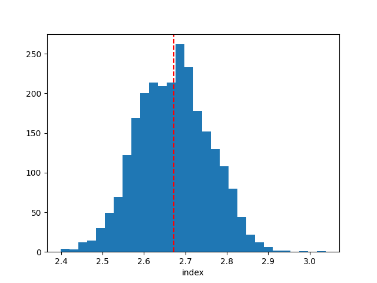
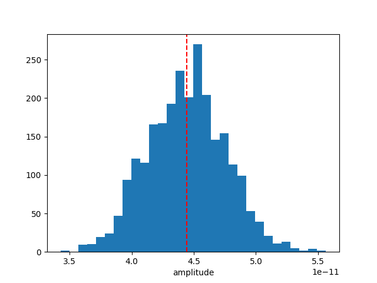

Note
Go to the end to download the full example code. or to run this example in your browser via Binder
Bayesian analysis with nested sampling#
A demonstration of a Bayesian analysis using the nested sampling technique.
Context#
1. Bayesian analysis#
Bayesian inference uses prior knowledge, in the form of a prior distribution, in order to estimate posterior probabilities which we traditionally visualise in the form of corner plots. These distributions contain more information than a maximum likelihood fit as they reveal not only the “best model” but provide a more accurate representation of errors and correlation between parameters. In particular, non-Gaussian degeneracies are complex to estimate with a maximum likelihood approach.
2. Limitations of the Markov Chain Monte Carlo approach#
A well-known approach to estimate this posterior distribution is the Markov Chain Monte Carlo (MCMC). This uses an ensemble of walkers to produce a chain of samples that after a convergence period will reach a stationary state. Once convergence is reached, the successive elements of the chain are samples of the target posterior distribution. However, the weakness of the MCMC approach lies in the “Once convergence” part. If the walkers are started far from the best likelihood region, the convergence time can be long or never reached if the walkers fall in a local minima. The choice of the initialisation point can become critical for complex models with a high number of dimensions and the ability of these walkers to escape a local minimum or to accurately describe a complex likelihood space is not guaranteed.
3. Nested sampling approach#
To overcome these issues, the nested sampling (NS) algorithm has gained traction in physics and astronomy. It is a Monte Carlo algorithm for computing an integral of the likelihood function over the prior model parameter space introduced in Skilling, 2004. The method performs this integral by evolving a collection of points through the parameter space (see recent reviews from Ashton et al., 2022, and Buchner, 2023). Without going into too many details, one important specificity of the NS method is that it starts from the entire parameter space and evolves a collection of live points to map all minima (including multiple modes if any), whereas Markov Chain Monte Carlo methods require an initialisation point and the walkers will explore the local likelihood. The ability of these walkers to escape a local minimum or to accurately describe a complex likelihood space is not guaranteed. This is a fundamental difference with MCMC or Minuit which will only ever probe the vicinity along their minimisation paths and do not have an overview of the global likelihood landscape. The analysis using the NS framework is more CPU time consuming than a standard classical fit, but it provides the full posterior distribution for all parameters, which is out of reach with traditional fitting techniques (N*(N-1)/2 contour plots to generate). In addition, it is more robust to the choice of initialisation, requires less human intervention and is therefore readily integrated in pipeline analysis. In Gammapy, we used the NS implementation of the UltraNest package (see here for more information), one of the leading package in Astronomy (already used in Cosmology and in X-rays). For a nice visualisation of the NS method see here : sampling visualisation. And for a tutorial of UltraNest applied to X-ray fitting with concrete examples and questions see : BXA Tutorial.
Note: please cite UltraNest if used for a paper
If you are using the “UltraNest” library for a paper, please follow its citation scheme: Cite UltraNest.
Proposed approach#
In this example, we will perform a Bayesian analysis with multiple 1D spectra of the Crab nebula data and investigate their posterior distributions.
Setup#
As usual, we’ll start with some setup …
import matplotlib.pyplot as plt
import numpy as np
import astropy.units as u
from gammapy.datasets import Datasets
from gammapy.datasets import SpectrumDatasetOnOff
from gammapy.modeling.models import (
SkyModel,
UniformPrior,
LogUniformPrior,
)
from gammapy.modeling.sampler import Sampler
Loading the spectral datasets#
Here we will load a few Crab 1D spectral data for which we will do a fit.
path = "$GAMMAPY_DATA/joint-crab/spectra/hess/"
datasets = Datasets()
for id in ["23526", "23559", "23592"]:
dataset = SpectrumDatasetOnOff.read(f"{path}pha_obs{id}.fits")
datasets.append(dataset)
Model definition#
Now we want to define the spectral model that will be fitted to the data. The Crab spectra will be fitted here with a simple powerlaw for simplicity.
model = SkyModel.create(spectral_model="pl", name="crab")
Warning
Priors definition: Unlike a traditional fit where priors on the parameters are optional, here it is inherent to the Bayesian approach and are therefore mandatory.
In this case we will set (min,max) prior that will define the
boundaries in which the sampling will be performed.
Note that it is usually recommended to use a LogUniformPrior for
the parameters that have a large amplitude range like the
amplitude parameter.
A UniformPrior means that the samples will be drawn with uniform
probability between the (min,max) values in the linear or log space
in the case of a LogUniformPrior.
model.spectral_model.amplitude.prior = LogUniformPrior(min=1e-12, max=1e-10)
model.spectral_model.index.prior = UniformPrior(min=1, max=5)
datasets.models = [model]
print(datasets.models)
DatasetModels
Component 0: SkyModel
Name : crab
Datasets names : None
Spectral model type : PowerLawSpectralModel
Spatial model type :
Temporal model type :
Parameters:
index : 2.000 +/- 0.00
amplitude : 1.00e-12 +/- 0.0e+00 1 / (TeV s cm2)
reference (frozen): 1.000 TeV
Defining the sampler and options#
As for the Fit object, the Sampler object can receive
different backend (although just one is available for now).
The Sampler comes with “reasonable” default parameters, but you can
change them via the sampler_opts dictionary.
Here is a short description of the most relevant parameters that you
could change :
live_points: minimum number of live points throughout the run. More points allow to discover multiple peaks if existing, but is slower. To test the Prior boundaries and for debugging, a lower number (~100) can be used before a production run with more points (~400 or more).frac_remain: the cut-off condition for the integration, set by the maximum allowed fraction of posterior mass left in the live points vs the dead points. High values (e.g., 0.5) are faster and can be used if the posterior distribution is a relatively simple shape. A low value (1e-1, 1e-2) is optimal for finding peaks, but slower.log_dir: directory where the output files will be stored. If set to None, no files will be written. If set to a string, a directory will be created containing the ongoing status of the run and final results. For time consuming analysis, it is highly recommended to use that option to monitor the run and restart it in case of a crash (withresume=True).
Important note: unlike the MCMC method, you don’t need to define the number of steps for which the sampler will run. The algorithm will automatically stop once a convergence criteria has been reached.
sampler_opts = {
"live_points": 300,
"frac_remain": 0.3,
"log_dir": None,
}
sampler = Sampler(backend="ultranest", sampler_opts=sampler_opts)
Next we can run the sampler on a given dataset. No options are accepted in the run method.
[ultranest] Sampling 300 live points from prior ...
Mono-modal Volume: ~exp(-3.86) * Expected Volume: exp(0.00) Quality: ok
index : +1.0|************************************************| +5.0
amplitude: +1.0e-12|********************************** **** ******* | +1.0e-10
Z=-inf(0.00%) | Like=-3467.21..-65.90 [-3467.2106..-360.6378] | it/evals=0/301 eff=0.0000% N=300
Z=-555.0(0.00%) | Like=-547.90..-65.90 [-3467.2106..-360.6378] | it/evals=21/322 eff=95.4545% N=300
Z=-546.6(0.00%) | Like=-541.20..-64.82 [-3467.2106..-360.6378] | it/evals=30/332 eff=93.7500% N=300
Z=-523.0(0.00%) | Like=-517.08..-64.82 [-3467.2106..-360.6378] | it/evals=51/354 eff=94.4444% N=300
Z=-513.5(0.00%) | Like=-503.33..-64.82 [-3467.2106..-360.6378] | it/evals=60/365 eff=92.3077% N=300
Mono-modal Volume: ~exp(-4.10) * Expected Volume: exp(-0.22) Quality: ok
index : +1.0|************************************************| +5.0
amplitude: +1.0e-12|****************************** *****************| +1.0e-10
Z=-500.3(0.00%) | Like=-493.21..-64.82 [-3467.2106..-360.6378] | it/evals=67/372 eff=93.0556% N=300
Z=-477.4(0.00%) | Like=-472.01..-64.82 [-3467.2106..-360.6378] | it/evals=87/394 eff=92.5532% N=300
Z=-476.1(0.00%) | Like=-470.67..-64.82 [-3467.2106..-360.6378] | it/evals=90/398 eff=91.8367% N=300
Z=-463.1(0.00%) | Like=-457.17..-64.82 [-3467.2106..-360.6378] | it/evals=109/421 eff=90.0826% N=300
Z=-450.6(0.00%) | Like=-443.36..-64.82 [-3467.2106..-360.6378] | it/evals=120/433 eff=90.2256% N=300
Mono-modal Volume: ~exp(-4.51) * Expected Volume: exp(-0.45) Quality: ok
index : +1.0|************************************************| +5.0
amplitude: +1.0e-12|****************************** *****************| +1.0e-10
Z=-440.7(0.00%) | Like=-434.41..-64.82 [-3467.2106..-360.6378] | it/evals=134/452 eff=88.1579% N=300
Z=-426.8(0.00%) | Like=-420.60..-64.82 [-3467.2106..-360.6378] | it/evals=150/469 eff=88.7574% N=300
Z=-407.6(0.00%) | Like=-402.01..-58.96 [-3467.2106..-360.6378] | it/evals=169/491 eff=88.4817% N=300
Z=-394.0(0.00%) | Like=-388.18..-58.96 [-3467.2106..-360.6378] | it/evals=180/504 eff=88.2353% N=300
Z=-375.2(0.00%) | Like=-368.33..-58.96 [-3467.2106..-360.6378] | it/evals=198/526 eff=87.6106% N=300
Mono-modal Volume: ~exp(-4.70) * Expected Volume: exp(-0.67) Quality: ok
index : +1.0| ***********************************************| +5.0
amplitude: +1.0e-12| ***************************** *****************| +1.0e-10
Z=-372.6(0.00%) | Like=-365.15..-58.96 [-3467.2106..-360.6378] | it/evals=201/529 eff=87.7729% N=300
Z=-365.1(0.00%) | Like=-358.28..-58.96 [-359.8784..-186.5153] | it/evals=210/539 eff=87.8661% N=300
Z=-353.7(0.00%) | Like=-348.23..-58.96 [-359.8784..-186.5153] | it/evals=228/561 eff=87.3563% N=300
Z=-331.3(0.00%) | Like=-320.58..-58.96 [-359.8784..-186.5153] | it/evals=240/574 eff=87.5912% N=300
Z=-309.0(0.00%) | Like=-300.69..-58.96 [-359.8784..-186.5153] | it/evals=257/596 eff=86.8243% N=300
Mono-modal Volume: ~exp(-5.02) * Expected Volume: exp(-0.89) Quality: ok
index : +1.0| ********************************************| +5.0
amplitude: +1.0e-12| **************************** *****************| +1.0e-10
Z=-298.6(0.00%) | Like=-290.72..-58.96 [-359.8784..-186.5153] | it/evals=268/608 eff=87.0130% N=300
Z=-295.5(0.00%) | Like=-284.51..-58.96 [-359.8784..-186.5153] | it/evals=270/610 eff=87.0968% N=300
Z=-281.6(0.00%) | Like=-274.69..-58.96 [-359.8784..-186.5153] | it/evals=287/633 eff=86.1862% N=300
Z=-272.2(0.00%) | Like=-264.72..-58.96 [-359.8784..-186.5153] | it/evals=300/650 eff=85.7143% N=300
Z=-257.3(0.00%) | Like=-250.97..-58.96 [-359.8784..-186.5153] | it/evals=316/672 eff=84.9462% N=300
Z=-250.1(0.00%) | Like=-243.31..-58.96 [-359.8784..-186.5153] | it/evals=330/687 eff=85.2713% N=300
Mono-modal Volume: ~exp(-5.31) * Expected Volume: exp(-1.12) Quality: ok
index : +1.0| ******************************************| +5.0
amplitude: +1.0e-12| *************************** *****************| +1.0e-10
Z=-247.3(0.00%) | Like=-240.82..-58.96 [-359.8784..-186.5153] | it/evals=335/693 eff=85.2417% N=300
Z=-233.3(0.00%) | Like=-226.21..-58.96 [-359.8784..-186.5153] | it/evals=351/715 eff=84.5783% N=300
Z=-225.1(0.00%) | Like=-217.79..-58.96 [-359.8784..-186.5153] | it/evals=360/726 eff=84.5070% N=300
Z=-216.7(0.00%) | Like=-210.27..-58.96 [-359.8784..-186.5153] | it/evals=375/749 eff=83.5189% N=300
Z=-210.4(0.00%) | Like=-204.00..-58.96 [-359.8784..-186.5153] | it/evals=388/772 eff=82.2034% N=300
Z=-209.6(0.00%) | Like=-203.16..-58.96 [-359.8784..-186.5153] | it/evals=390/774 eff=82.2785% N=300
Mono-modal Volume: ~exp(-5.31) Expected Volume: exp(-1.34) Quality: ok
index : +1.0| ************************************* ***| +5.0
amplitude: +1.0e-12| ********************************************| +1.0e-10
Z=-202.6(0.00%) | Like=-195.70..-58.96 [-359.8784..-186.5153] | it/evals=405/795 eff=81.8182% N=300
Z=-196.4(0.00%) | Like=-189.68..-58.96 [-359.8784..-186.5153] | it/evals=420/816 eff=81.3953% N=300
Z=-189.5(0.00%) | Like=-182.88..-58.96 [-186.4573..-128.7959] | it/evals=433/838 eff=80.4833% N=300
Z=-186.3(0.00%) | Like=-180.55..-58.96 [-186.4573..-128.7959] | it/evals=446/860 eff=79.6429% N=300
Z=-185.1(0.00%) | Like=-178.96..-58.96 [-186.4573..-128.7959] | it/evals=450/865 eff=79.6460% N=300
Mono-modal Volume: ~exp(-5.59) * Expected Volume: exp(-1.56) Quality: ok
index : +1.0| ************************************ | +5.0
amplitude: +1.0e-12| ***************************************** *| +1.0e-10
Z=-179.6(0.00%) | Like=-173.34..-58.96 [-186.4573..-128.7959] | it/evals=469/889 eff=79.6265% N=300
Z=-176.1(0.00%) | Like=-170.29..-58.96 [-186.4573..-128.7959] | it/evals=480/903 eff=79.6020% N=300
Z=-172.8(0.00%) | Like=-167.00..-58.96 [-186.4573..-128.7959] | it/evals=497/926 eff=79.3930% N=300
Z=-169.2(0.00%) | Like=-163.67..-58.96 [-186.4573..-128.7959] | it/evals=510/944 eff=79.1925% N=300
Z=-165.1(0.00%) | Like=-158.46..-58.96 [-186.4573..-128.7959] | it/evals=524/968 eff=78.4431% N=300
Mono-modal Volume: ~exp(-5.66) * Expected Volume: exp(-1.79) Quality: ok
index : +1.0| ********************************* | +5.0
amplitude: +1.0e-12| **************************************** *| +1.0e-10
Z=-161.7(0.00%) | Like=-155.39..-58.96 [-186.4573..-128.7959] | it/evals=536/984 eff=78.3626% N=300
Z=-160.6(0.00%) | Like=-154.42..-58.96 [-186.4573..-128.7959] | it/evals=540/990 eff=78.2609% N=300
Z=-155.8(0.00%) | Like=-149.25..-58.96 [-186.4573..-128.7959] | it/evals=559/1012 eff=78.5112% N=300
Z=-152.1(0.00%) | Like=-146.00..-58.96 [-186.4573..-128.7959] | it/evals=570/1025 eff=78.6207% N=300
Z=-149.5(0.00%) | Like=-142.97..-58.96 [-186.4573..-128.7959] | it/evals=583/1049 eff=77.8371% N=300
Z=-145.0(0.00%) | Like=-138.77..-58.96 [-186.4573..-128.7959] | it/evals=599/1071 eff=77.6913% N=300
Z=-144.8(0.00%) | Like=-138.66..-58.96 [-186.4573..-128.7959] | it/evals=600/1072 eff=77.7202% N=300
Mono-modal Volume: ~exp(-6.03) * Expected Volume: exp(-2.01) Quality: ok
index : +1.0| **************************** +4.1 | +5.0
amplitude: +1.0e-12| ************************************* | +1.0e-10
Z=-143.9(0.00%) | Like=-137.38..-58.96 [-186.4573..-128.7959] | it/evals=603/1076 eff=77.7062% N=300
Z=-138.5(0.00%) | Like=-132.03..-58.96 [-186.4573..-128.7959] | it/evals=624/1098 eff=78.1955% N=300
Z=-136.9(0.00%) | Like=-130.68..-58.96 [-186.4573..-128.7959] | it/evals=630/1109 eff=77.8739% N=300
Z=-134.2(0.00%) | Like=-128.09..-58.96 [-128.6683..-91.6424] | it/evals=643/1131 eff=77.3767% N=300
Z=-131.7(0.00%) | Like=-125.88..-58.96 [-128.6683..-91.6424] | it/evals=657/1154 eff=76.9321% N=300
Z=-131.4(0.00%) | Like=-125.67..-58.96 [-128.6683..-91.6424] | it/evals=660/1157 eff=77.0128% N=300
Mono-modal Volume: ~exp(-6.06) * Expected Volume: exp(-2.23) Quality: ok
index : +1.0| ************************** +3.9 | +5.0
amplitude: +1.0e-12| ********************************** | +1.0e-10
Z=-130.0(0.00%) | Like=-123.60..-58.96 [-128.6683..-91.6424] | it/evals=670/1170 eff=77.0115% N=300
Z=-126.2(0.00%) | Like=-119.89..-58.96 [-128.6683..-91.6424] | it/evals=685/1192 eff=76.7937% N=300
Z=-125.4(0.00%) | Like=-118.70..-58.96 [-128.6683..-91.6424] | it/evals=690/1198 eff=76.8374% N=300
Z=-122.3(0.00%) | Like=-116.13..-58.96 [-128.6683..-91.6424] | it/evals=706/1219 eff=76.8226% N=300
Z=-120.8(0.00%) | Like=-114.70..-58.96 [-128.6683..-91.6424] | it/evals=720/1238 eff=76.7591% N=300
Mono-modal Volume: ~exp(-6.22) * Expected Volume: exp(-2.46) Quality: ok
index : +1.0| +2.0 *********************** +3.8 | +5.0
amplitude: +1.0e-12| ***************************** +7.8e-11| +1.0e-10
Z=-118.3(0.00%) | Like=-111.04..-58.87 [-128.6683..-91.6424] | it/evals=737/1260 eff=76.7708% N=300
Z=-114.0(0.00%) | Like=-107.43..-58.87 [-128.6683..-91.6424] | it/evals=750/1277 eff=76.7656% N=300
Z=-110.5(0.00%) | Like=-104.15..-58.87 [-128.6683..-91.6424] | it/evals=768/1299 eff=76.8769% N=300
Z=-109.1(0.00%) | Like=-102.90..-58.87 [-128.6683..-91.6424] | it/evals=780/1314 eff=76.9231% N=300
Z=-107.2(0.00%) | Like=-100.71..-58.87 [-128.6683..-91.6424] | it/evals=797/1336 eff=76.9305% N=300
Mono-modal Volume: ~exp(-6.74) * Expected Volume: exp(-2.68) Quality: ok
index : +1.0| +2.0 ******************* +3.6 | +5.0
amplitude: +1.0e-12| ********************* ***** +7.6e-11 | +1.0e-10
Z=-106.2(0.00%) | Like=-99.67..-58.87 [-128.6683..-91.6424] | it/evals=804/1343 eff=77.0853% N=300
Z=-105.2(0.00%) | Like=-98.48..-58.87 [-128.6683..-91.6424] | it/evals=810/1349 eff=77.2164% N=300
Z=-102.7(0.00%) | Like=-96.30..-58.87 [-128.6683..-91.6424] | it/evals=827/1371 eff=77.2176% N=300
Z=-100.9(0.00%) | Like=-94.10..-58.87 [-128.6683..-91.6424] | it/evals=840/1389 eff=77.1350% N=300
Z=-98.6(0.00%) | Like=-92.14..-58.87 [-128.6683..-91.6424] | it/evals=856/1411 eff=77.0477% N=300
Z=-97.2(0.00%) | Like=-91.09..-58.87 [-91.5725..-75.4773] | it/evals=870/1428 eff=77.1277% N=300
Mono-modal Volume: ~exp(-6.75) * Expected Volume: exp(-2.90) Quality: ok
index : +1.0| +2.1 ***************** +3.5 | +5.0
amplitude: +1.0e-12| +2.4e-11 ************************ +7.3e-11 | +1.0e-10
Z=-97.1(0.00%) | Like=-91.09..-58.87 [-91.5725..-75.4773] | it/evals=871/1429 eff=77.1479% N=300
Z=-96.0(0.00%) | Like=-89.49..-58.87 [-91.5725..-75.4773] | it/evals=887/1451 eff=77.0634% N=300
Z=-94.8(0.00%) | Like=-88.62..-58.87 [-91.5725..-75.4773] | it/evals=900/1470 eff=76.9231% N=300
Z=-93.5(0.00%) | Like=-86.95..-58.87 [-91.5725..-75.4773] | it/evals=917/1492 eff=76.9295% N=300
Z=-91.9(0.00%) | Like=-85.37..-58.87 [-91.5725..-75.4773] | it/evals=930/1507 eff=77.0505% N=300
Mono-modal Volume: ~exp(-7.00) * Expected Volume: exp(-3.13) Quality: ok
index : +1.0| +2.2 **************** +3.4 | +5.0
amplitude: +1.0e-12| +2.6e-11 ********************* +6.9e-11 | +1.0e-10
Z=-91.1(0.00%) | Like=-84.66..-58.87 [-91.5725..-75.4773] | it/evals=938/1518 eff=77.0115% N=300
Z=-89.8(0.00%) | Like=-83.37..-58.87 [-91.5725..-75.4773] | it/evals=953/1540 eff=76.8548% N=300
Z=-89.3(0.00%) | Like=-83.03..-58.87 [-91.5725..-75.4773] | it/evals=960/1547 eff=76.9848% N=300
Z=-88.1(0.00%) | Like=-81.71..-58.87 [-91.5725..-75.4773] | it/evals=975/1569 eff=76.8322% N=300
Z=-87.1(0.00%) | Like=-80.64..-58.87 [-91.5725..-75.4773] | it/evals=989/1591 eff=76.6073% N=300
Z=-87.0(0.00%) | Like=-80.63..-58.87 [-91.5725..-75.4773] | it/evals=990/1592 eff=76.6254% N=300
Mono-modal Volume: ~exp(-7.06) * Expected Volume: exp(-3.35) Quality: ok
index : +1.0| +2.2 ************** +3.3 | +5.0
amplitude: +1.0e-12| +2.8e-11 ******************** +6.6e-11 | +1.0e-10
Z=-85.9(0.00%) | Like=-79.57..-58.87 [-91.5725..-75.4773] | it/evals=1005/1613 eff=76.5423% N=300
Z=-85.0(0.00%) | Like=-78.55..-58.87 [-91.5725..-75.4773] | it/evals=1020/1633 eff=76.5191% N=300
Z=-84.0(0.00%) | Like=-77.49..-58.87 [-91.5725..-75.4773] | it/evals=1036/1655 eff=76.4576% N=300
Z=-83.1(0.00%) | Like=-76.78..-58.87 [-91.5725..-75.4773] | it/evals=1050/1671 eff=76.5864% N=300
Z=-82.4(0.00%) | Like=-75.70..-58.87 [-91.5725..-75.4773] | it/evals=1062/1695 eff=76.1290% N=300
Mono-modal Volume: ~exp(-7.61) * Expected Volume: exp(-3.57) Quality: ok
index : +1.0| +2.2 ************* +3.2 | +5.0
amplitude: +1.0e-12| +2.9e-11 ****************** +6.4e-11 | +1.0e-10
Z=-81.7(0.00%) | Like=-75.34..-58.87 [-75.4688..-67.1779] | it/evals=1072/1709 eff=76.0823% N=300
Z=-81.3(0.00%) | Like=-74.79..-58.87 [-75.4688..-67.1779] | it/evals=1080/1720 eff=76.0563% N=300
Z=-80.5(0.00%) | Like=-74.16..-58.87 [-75.4688..-67.1779] | it/evals=1094/1742 eff=75.8669% N=300
Z=-79.8(0.00%) | Like=-73.49..-58.87 [-75.4688..-67.1779] | it/evals=1109/1768 eff=75.5450% N=300
Z=-79.7(0.00%) | Like=-73.35..-58.87 [-75.4688..-67.1779] | it/evals=1110/1770 eff=75.5102% N=300
Z=-78.9(0.00%) | Like=-72.53..-58.87 [-75.4688..-67.1779] | it/evals=1127/1794 eff=75.4351% N=300
Mono-modal Volume: ~exp(-7.77) * Expected Volume: exp(-3.80) Quality: ok
index : +1.0| +2.3 *********** +3.1 | +5.0
amplitude: +1.0e-12| +3.0e-11 **************** +6.2e-11 | +1.0e-10
Z=-78.4(0.00%) | Like=-71.97..-58.87 [-75.4688..-67.1779] | it/evals=1139/1810 eff=75.4305% N=300
Z=-78.3(0.00%) | Like=-71.94..-58.87 [-75.4688..-67.1779] | it/evals=1140/1811 eff=75.4467% N=300
Z=-77.7(0.00%) | Like=-71.39..-58.87 [-75.4688..-67.1779] | it/evals=1155/1832 eff=75.3916% N=300
Z=-77.1(0.00%) | Like=-70.65..-58.87 [-75.4688..-67.1779] | it/evals=1170/1852 eff=75.3866% N=300
Z=-76.4(0.00%) | Like=-69.83..-58.85 [-75.4688..-67.1779] | it/evals=1187/1874 eff=75.4130% N=300
Z=-75.9(0.00%) | Like=-69.51..-58.85 [-75.4688..-67.1779] | it/evals=1200/1893 eff=75.3296% N=300
Mono-modal Volume: ~exp(-7.77) Expected Volume: exp(-4.02) Quality: ok
index : +1.0| +2.3 ********** +3.1 | +5.0
amplitude: +1.0e-12| +3.2e-11 ************** +5.9e-11 | +1.0e-10
Z=-75.5(0.00%) | Like=-69.11..-58.85 [-75.4688..-67.1779] | it/evals=1211/1914 eff=75.0310% N=300
Z=-74.9(0.01%) | Like=-68.55..-58.85 [-75.4688..-67.1779] | it/evals=1226/1936 eff=74.9389% N=300
Z=-74.8(0.01%) | Like=-68.24..-58.85 [-75.4688..-67.1779] | it/evals=1230/1944 eff=74.8175% N=300
Z=-74.3(0.01%) | Like=-67.83..-58.85 [-75.4688..-67.1779] | it/evals=1245/1966 eff=74.7299% N=300
Z=-73.9(0.02%) | Like=-67.55..-58.81 [-75.4688..-67.1779] | it/evals=1258/1989 eff=74.4819% N=300
Z=-73.8(0.02%) | Like=-67.53..-58.81 [-75.4688..-67.1779] | it/evals=1260/1991 eff=74.5121% N=300
Mono-modal Volume: ~exp(-8.56) * Expected Volume: exp(-4.24) Quality: ok
index : +1.0| +2.4 ********* +3.0 | +5.0
amplitude: +1.0e-12| +3.3e-11 ************* +5.8e-11 | +1.0e-10
Z=-73.5(0.03%) | Like=-67.15..-58.81 [-67.1776..-65.4494] | it/evals=1273/2010 eff=74.4444% N=300
Z=-73.1(0.04%) | Like=-66.79..-58.81 [-67.1776..-65.4494] | it/evals=1290/2028 eff=74.6528% N=300
Z=-72.6(0.06%) | Like=-66.06..-58.81 [-67.1776..-65.4494] | it/evals=1310/2049 eff=74.8999% N=300
Z=-72.3(0.08%) | Like=-65.83..-58.81 [-67.1776..-65.4494] | it/evals=1320/2064 eff=74.8299% N=300
Z=-72.0(0.11%) | Like=-65.64..-58.81 [-67.1776..-65.4494] | it/evals=1332/2087 eff=74.5383% N=300
Mono-modal Volume: ~exp(-8.63) * Expected Volume: exp(-4.47) Quality: ok
index : +1.0| +2.4 ******** +3.0 | +5.0
amplitude: +1.0e-12| +3.4e-11 *********** +5.6e-11 | +1.0e-10
Z=-71.8(0.13%) | Like=-65.38..-58.81 [-65.4439..-65.2198] | it/evals=1340/2099 eff=74.4858% N=300
Z=-71.6(0.16%) | Like=-65.26..-58.81 [-65.4439..-65.2198] | it/evals=1350/2110 eff=74.5856% N=300
Z=-71.3(0.22%) | Like=-65.01..-58.78 [-65.0063..-64.9926] | it/evals=1367/2132 eff=74.6179% N=300
Z=-71.0(0.27%) | Like=-64.73..-58.78 [-64.7555..-64.7278] | it/evals=1380/2147 eff=74.7158% N=300
Z=-70.7(0.37%) | Like=-64.44..-58.78 [-64.4816..-64.4380] | it/evals=1397/2168 eff=74.7859% N=300
Mono-modal Volume: ~exp(-8.83) * Expected Volume: exp(-4.69) Quality: ok
index : +1.0| +2.4 ******** +3.0 | +5.0
amplitude: +1.0e-12| +3.5e-11 *********** +5.5e-11 | +1.0e-10
Z=-70.6(0.43%) | Like=-64.34..-58.78 [-64.3354..-64.3087] | it/evals=1407/2183 eff=74.7212% N=300
Z=-70.5(0.46%) | Like=-64.30..-58.78 [-64.3011..-64.2602] | it/evals=1410/2187 eff=74.7218% N=300
Z=-70.3(0.59%) | Like=-63.88..-58.78 [-63.8955..-63.8807] | it/evals=1427/2209 eff=74.7512% N=300
Z=-70.0(0.75%) | Like=-63.66..-58.78 [-63.6761..-63.6600] | it/evals=1440/2227 eff=74.7276% N=300
Z=-69.8(0.95%) | Like=-63.49..-58.78 [-63.4870..-63.4861]*| it/evals=1456/2249 eff=74.7050% N=300
Z=-69.6(1.18%) | Like=-63.29..-58.78 [-63.3016..-63.2892] | it/evals=1470/2269 eff=74.6572% N=300
Mono-modal Volume: ~exp(-8.83) Expected Volume: exp(-4.91) Quality: ok
index : +1.0| +2.4 ******* +2.9 | +5.0
amplitude: +1.0e-12| +3.6e-11 ********** +5.4e-11 | +1.0e-10
Z=-69.4(1.45%) | Like=-63.16..-58.78 [-63.1583..-63.1009] | it/evals=1485/2288 eff=74.6982% N=300
Z=-69.2(1.77%) | Like=-62.95..-58.78 [-62.9482..-62.9477]*| it/evals=1500/2308 eff=74.7012% N=300
Z=-69.1(2.11%) | Like=-62.69..-58.78 [-62.7031..-62.6915] | it/evals=1514/2330 eff=74.5813% N=300
Z=-68.9(2.44%) | Like=-62.51..-58.78 [-62.5066..-62.4990]*| it/evals=1525/2352 eff=74.3177% N=300
Z=-68.9(2.61%) | Like=-62.45..-58.78 [-62.4496..-62.4369] | it/evals=1530/2359 eff=74.3079% N=300
Mono-modal Volume: ~exp(-9.03) * Expected Volume: exp(-5.14) Quality: ok
index : +1.0| +2.5 ****** +2.9 | +5.0
amplitude: +1.0e-12| +3.7e-11 ******** +5.2e-11 | +1.0e-10
Z=-68.7(2.94%) | Like=-62.29..-58.78 [-62.2923..-62.2894]*| it/evals=1541/2376 eff=74.2293% N=300
Z=-68.5(3.63%) | Like=-62.10..-58.78 [-62.1093..-62.0990] | it/evals=1557/2397 eff=74.2489% N=300
Z=-68.5(3.76%) | Like=-62.07..-58.78 [-62.0720..-62.0623]*| it/evals=1560/2400 eff=74.2857% N=300
Z=-68.3(4.62%) | Like=-61.94..-58.78 [-61.9443..-61.9285] | it/evals=1578/2421 eff=74.3989% N=300
Z=-68.2(5.21%) | Like=-61.82..-58.78 [-61.8165..-61.8023] | it/evals=1590/2437 eff=74.4034% N=300
Z=-68.0(6.10%) | Like=-61.65..-58.78 [-61.6487..-61.6431]*| it/evals=1607/2459 eff=74.4326% N=300
Mono-modal Volume: ~exp(-9.41) * Expected Volume: exp(-5.36) Quality: ok
index : +1.0| +2.5 ****** +2.9 | +5.0
amplitude: +1.0e-12| +3.8e-11 ******** +5.2e-11 | +1.0e-10
Z=-68.0(6.17%) | Like=-61.64..-58.78 [-61.6431..-61.6266] | it/evals=1608/2461 eff=74.4100% N=300
Z=-67.9(6.88%) | Like=-61.54..-58.78 [-61.5405..-61.5336]*| it/evals=1620/2479 eff=74.3460% N=300
Z=-67.8(7.94%) | Like=-61.33..-58.78 [-61.3339..-61.3332]*| it/evals=1636/2501 eff=74.3299% N=300
Z=-67.6(8.89%) | Like=-61.23..-58.78 [-61.2295..-61.2242]*| it/evals=1650/2522 eff=74.2574% N=300
Z=-67.5(10.48%) | Like=-61.09..-58.78 [-61.1099..-61.0907] | it/evals=1669/2544 eff=74.3761% N=300
Mono-modal Volume: ~exp(-9.77) * Expected Volume: exp(-5.58) Quality: ok
index : +1.0| +2.5 ****** +2.9 | +5.0
amplitude: +1.0e-12| +3.8e-11 ******* +5.1e-11 | +1.0e-10
Z=-67.5(10.95%) | Like=-61.02..-58.76 [-61.0246..-61.0083] | it/evals=1675/2551 eff=74.4114% N=300
Z=-67.4(11.23%) | Like=-60.96..-58.76 [-60.9888..-60.9643] | it/evals=1680/2559 eff=74.3692% N=300
Z=-67.3(12.95%) | Like=-60.84..-58.76 [-60.8430..-60.8430]*| it/evals=1698/2580 eff=74.4737% N=300
Z=-67.2(14.08%) | Like=-60.72..-58.76 [-60.7239..-60.7237]*| it/evals=1710/2599 eff=74.3802% N=300
Z=-67.1(15.77%) | Like=-60.61..-58.76 [-60.6081..-60.6075]*| it/evals=1727/2620 eff=74.4397% N=300
Z=-67.0(17.13%) | Like=-60.58..-58.76 [-60.5758..-60.5724]*| it/evals=1740/2638 eff=74.4226% N=300
Mono-modal Volume: ~exp(-10.01) * Expected Volume: exp(-5.81) Quality: ok
index : +1.0| +2.5 **** +2.8 | +5.0
amplitude: +1.0e-12| +3.9e-11 ****** +5.0e-11 | +1.0e-10
Z=-67.0(17.33%) | Like=-60.57..-58.76 [-60.5707..-60.5649]*| it/evals=1742/2641 eff=74.4126% N=300
Z=-66.9(19.44%) | Like=-60.49..-58.76 [-60.4944..-60.4842] | it/evals=1762/2663 eff=74.5662% N=300
Z=-66.8(20.34%) | Like=-60.47..-58.76 [-60.4666..-60.4607]*| it/evals=1770/2674 eff=74.5577% N=300
Z=-66.7(22.08%) | Like=-60.38..-58.76 [-60.3762..-60.3751]*| it/evals=1787/2695 eff=74.6138% N=300
Z=-66.7(23.49%) | Like=-60.26..-58.76 [-60.2617..-60.2560]*| it/evals=1800/2717 eff=74.4725% N=300
Mono-modal Volume: ~exp(-10.02) * Expected Volume: exp(-6.03) Quality: ok
index : +1.0| +2.5 **** +2.8 | +5.0
amplitude: +1.0e-12| +3.9e-11 ****** +5.0e-11 | +1.0e-10
Z=-66.6(24.45%) | Like=-60.22..-58.76 [-60.2194..-60.2153]*| it/evals=1809/2728 eff=74.5058% N=300
Z=-66.6(26.35%) | Like=-60.16..-58.76 [-60.1629..-60.1607]*| it/evals=1825/2750 eff=74.4898% N=300
Z=-66.5(26.94%) | Like=-60.13..-58.76 [-60.1256..-60.1210]*| it/evals=1830/2756 eff=74.5114% N=300
Z=-66.5(29.17%) | Like=-60.07..-58.76 [-60.0702..-60.0630]*| it/evals=1848/2777 eff=74.6064% N=300
Z=-66.4(30.52%) | Like=-60.04..-58.76 [-60.0406..-60.0403]*| it/evals=1860/2794 eff=74.5790% N=300
Z=-66.4(32.11%) | Like=-60.01..-58.76 [-60.0066..-59.9975]*| it/evals=1873/2816 eff=74.4436% N=300
Mono-modal Volume: ~exp(-10.45) * Expected Volume: exp(-6.25) Quality: ok
index : +1.0| +2.5 **** +2.8 | +5.0
amplitude: +1.0e-12| +4.0e-11 ****** +4.9e-11 | +1.0e-10
Z=-66.3(32.49%) | Like=-59.99..-58.76 [-59.9931..-59.9917]*| it/evals=1876/2823 eff=74.3559% N=300
Z=-66.3(34.01%) | Like=-59.96..-58.76 [-59.9567..-59.9552]*| it/evals=1890/2839 eff=74.4388% N=300
Z=-66.2(35.39%) | Like=-59.93..-58.76 [-59.9283..-59.9226]*| it/evals=1903/2860 eff=74.3359% N=300
Z=-66.2(37.25%) | Like=-59.87..-58.76 [-59.8659..-59.8656]*| it/evals=1919/2881 eff=74.3510% N=300
Z=-66.2(37.39%) | Like=-59.87..-58.76 [-59.8656..-59.8621]*| it/evals=1920/2882 eff=74.3610% N=300
Z=-66.1(39.13%) | Like=-59.81..-58.76 [-59.8071..-59.8067]*| it/evals=1935/2904 eff=74.3088% N=300
Mono-modal Volume: ~exp(-10.45) Expected Volume: exp(-6.48) Quality: ok
index : +1.0| +2.5 **** +2.8 | +5.0
amplitude: +1.0e-12| +4.0e-11 ****** +4.9e-11 | +1.0e-10
Z=-66.1(40.72%) | Like=-59.78..-58.75 [-59.7817..-59.7808]*| it/evals=1950/2924 eff=74.3140% N=300
Z=-66.1(42.69%) | Like=-59.71..-58.75 [-59.7115..-59.7111]*| it/evals=1967/2946 eff=74.3386% N=300
Z=-66.0(44.40%) | Like=-59.68..-58.75 [-59.6755..-59.6701]*| it/evals=1980/2962 eff=74.3802% N=300
Z=-66.0(45.56%) | Like=-59.64..-58.75 [-59.6356..-59.6346]*| it/evals=1991/2984 eff=74.1803% N=300
Z=-66.0(47.66%) | Like=-59.60..-58.75 [-59.6018..-59.6009]*| it/evals=2008/3005 eff=74.2329% N=300
Mono-modal Volume: ~exp(-10.55) * Expected Volume: exp(-6.70) Quality: ok
index : +1.0| +2.6 **** +2.8 | +5.0
amplitude: +1.0e-12| +4.1e-11 **** +4.8e-11 | +1.0e-10
Z=-66.0(47.89%) | Like=-59.60..-58.75 [-59.6001..-59.5983]*| it/evals=2010/3010 eff=74.1697% N=300
Z=-65.9(49.43%) | Like=-59.56..-58.75 [-59.5602..-59.5598]*| it/evals=2025/3034 eff=74.0673% N=300
Z=-65.9(51.02%) | Like=-59.54..-58.75 [-59.5411..-59.5392]*| it/evals=2040/3054 eff=74.0741% N=300
Z=-65.8(52.83%) | Like=-59.50..-58.75 [-59.4958..-59.4955]*| it/evals=2059/3078 eff=74.1181% N=300
Z=-65.8(53.89%) | Like=-59.46..-58.75 [-59.4697..-59.4553] | it/evals=2070/3093 eff=74.1139% N=300
Mono-modal Volume: ~exp(-10.55) Expected Volume: exp(-6.92) Quality: ok
index : +1.0| +2.6 **** +2.8 | +5.0
amplitude: +1.0e-12| +4.1e-11 **** +4.8e-11 | +1.0e-10
Z=-65.8(55.55%) | Like=-59.43..-58.75 [-59.4258..-59.4112] | it/evals=2086/3113 eff=74.1557% N=300
Z=-65.8(56.78%) | Like=-59.37..-58.75 [-59.3709..-59.3684]*| it/evals=2098/3135 eff=74.0035% N=300
Z=-65.8(57.01%) | Like=-59.37..-58.75 [-59.3681..-59.3669]*| it/evals=2100/3138 eff=73.9958% N=300
Z=-65.7(58.49%) | Like=-59.35..-58.75 [-59.3471..-59.3402]*| it/evals=2114/3161 eff=73.8902% N=300
Z=-65.7(60.00%) | Like=-59.32..-58.75 [-59.3170..-59.3151]*| it/evals=2130/3184 eff=73.8558% N=300
Mono-modal Volume: ~exp(-11.01) * Expected Volume: exp(-7.15) Quality: ok
index : +1.0| +2.6 **** +2.8 | +5.0
amplitude: +1.0e-12| +4.1e-11 **** +4.8e-11 | +1.0e-10
Z=-65.7(61.40%) | Like=-59.29..-58.75 [-59.2886..-59.2868]*| it/evals=2144/3201 eff=73.9055% N=300
Z=-65.7(62.96%) | Like=-59.26..-58.75 [-59.2583..-59.2538]*| it/evals=2160/3221 eff=73.9473% N=300
Z=-65.6(64.37%) | Like=-59.24..-58.75 [-59.2359..-59.2340]*| it/evals=2176/3243 eff=73.9382% N=300
Z=-65.6(65.65%) | Like=-59.21..-58.75 [-59.2142..-59.2133]*| it/evals=2190/3261 eff=73.9615% N=300
Z=-65.6(67.14%) | Like=-59.19..-58.75 [-59.1945..-59.1938]*| it/evals=2207/3283 eff=73.9859% N=300
Mono-modal Volume: ~exp(-11.24) * Expected Volume: exp(-7.37) Quality: ok
index : +1.0| +2.6 ** +2.7 | +5.0
amplitude: +1.0e-12| +4.2e-11 **** +4.7e-11 | +1.0e-10
Z=-65.6(67.47%) | Like=-59.19..-58.75 [-59.1915..-59.1910]*| it/evals=2211/3287 eff=74.0208% N=300
Z=-65.6(68.26%) | Like=-59.18..-58.75 [-59.1785..-59.1776]*| it/evals=2220/3296 eff=74.0988% N=300
Z=-65.6(69.84%) | Like=-59.14..-58.75 [-59.1404..-59.1397]*| it/evals=2240/3317 eff=74.2459% N=300
[ultranest] Explored until L=-6e+01
[ultranest] Likelihood function evaluations: 3318
[ultranest] logZ = -65.2 +- 0.09868
[ultranest] Effective samples strategy satisfied (ESS = 1015.9, need >400)
[ultranest] Posterior uncertainty strategy is satisfied (KL: 0.45+-0.08 nat, need <0.50 nat)
[ultranest] Evidency uncertainty strategy is satisfied (dlogz=0.28, need <0.5)
[ultranest] logZ error budget: single: 0.13 bs:0.10 tail:0.26 total:0.28 required:<0.50
[ultranest] done iterating.
logZ = -65.202 +- 0.336
single instance: logZ = -65.202 +- 0.134
bootstrapped : logZ = -65.204 +- 0.210
tail : logZ = +- 0.262
insert order U test : converged: True correlation: inf iterations
index : 2.367 │ ▁▁▁▁▁▁▁▂▂▃▅▆▆▆▇▇▇▇▆▅▅▄▃▃▂▁▁▁▁▁▁ ▁ ▁ │3.071 2.671 +- 0.087
amplitude : 0.0000000000332│ ▁▁ ▁▁▁▁▁▂▃▅▃▅▅▅▆▇▆▇▇▆▅▅▄▃▃▂▁▁▁▁▁▁▁▁▁▁ │0.0000000000567 0.0000000000444 +- 0.0000000000031
Understanding the outputs#
In the Jupyter notebook, you should be able to see an interactive visualisation of how the parameter space shrinks which starts from the (min,max) shrinks down towards the optimal parameters.
The output above is filled with interesting information. Here we provide a short description of the most relevant information provided above. For more detailed information see the UltraNest docs.
During the sampling
Z=-68.8(0.53%) | Like=-63.96..-58.75 [-63.9570..-63.9539]*| it/evals=640/1068 eff=73.7327% N=300
Some important information here is:
Progress (0.53%): the completed fraction of the integral. This is not a time progress bar. Stays at zero for a good fraction of the run.
Efficiency (eff value) of the sampling: this indicates out of the proposed new points, how many were accepted. If your efficiency is too small (<<1%), maybe you should revise your priors (e.g use a LogUniform prior for the normalisation).
Final outputs
The final lines indicate that all three “convergence” strategies are satisfied (samples, posterior uncertainty, and evidence uncertainty).
logZ = -65.104 +- 0.292
The main goal of the Nested sampling algorithm is to estimate Z (the Bayesian evidence) which is given above together with an uncertainty. In a similar way to deltaLogLike and deltaAIC, deltaLogZ values can be used for model comparison. For more information see : on the use of the evidence for model comparison. An interesting comparison of the efficiency and false discovery rate of model selection with deltaLogLike and deltaLogZ is given in Appendix C of Buchner et al., 2014.
Results stored on disk
if log_dir is set to a name where the results will be stored, then
a directory is created containing many useful results and plots.
A description of these outputs is given in the Ultranest
docs.
Results#
Within a Bayesian analysis, the concept of best-fit has to be viewed differently from what is done in a gradient descent fit.
The output of the Bayesian analysis is the posterior distribution and there is no “best-fit” output. One has to define, based on the posteriors, what we want to consider as “best-fit” and several options are possible:
the mean of the distribution
the median
the lowest likelihood value
By default the DatasetModels will be updated with the mean of
the posterior distributions.
print(result_joint.models)
DatasetModels
Component 0: SkyModel
Name : crab
Datasets names : None
Spectral model type : PowerLawSpectralModel
Spatial model type :
Temporal model type :
Parameters:
index : 2.671 +/- 0.09
amplitude : 4.44e-11 +/- 3.1e-12 1 / (TeV s cm2)
reference (frozen): 1.000 TeV
The Sampler class returns a very rich dictionary.
The most “standard” information about the posterior distributions can
be found in :
print(result_joint.sampler_results["posterior"])
{'mean': [2.6713231894254514, 4.4431674641014625e-11], 'stdev': [0.0872106716077779, 3.1371053800796345e-12], 'median': [2.671629082893036, 4.4470027107506466e-11], 'errlo': [2.582957166805317, 4.117403018289523e-11], 'errup': [2.7624908394983763, 4.7598838986192725e-11], 'information_gain_bits': [2.6874670775185168, 3.097954775387316]}
Besides mean, errors, etc, an interesting value is the
information gain which estimates how much the posterior
distribution has shrinked with respect to the prior (i.e. how much
we’ve learned). A value < 1 means that the parameter is poorly
constrained within the prior range (we haven’t learned much with respect to our prior assumption).
For a physical example see this
example.
The SamplerResult dictionary contains also other interesting
information :
print(result_joint.sampler_results.keys())
dict_keys(['niter', 'logz', 'logzerr', 'logz_bs', 'logz_single', 'logzerr_tail', 'logzerr_bs', 'ess', 'H', 'Herr', 'posterior', 'weighted_samples', 'samples', 'maximum_likelihood', 'ncall', 'paramnames', 'logzerr_single', 'insertion_order_MWW_test'])
Of particular interest, the samples used in the process to approximate the posterior distribution can be accessed via :
for i, n in enumerate(model.parameters.free_parameters.names):
s = result_joint.samples[:, i]
fig, ax = plt.subplots()
ax.hist(s, bins=30)
ax.axvline(np.mean(s), ls="--", color="red")
ax.set_xlabel(n)
plt.show()
- 
- 
While the above plots are interesting, the real strength of the Bayesian analysis is to visualise all parameters correlations which is usually done using “corner plots”. Ultranest corner plot function is a wrapper around the corner package. See the above link for optional keywords. Other packages exist for corner plots, like chainconsumer which is discussed later in this tutorial.
from ultranest.plot import cornerplot
cornerplot(
result_joint.sampler_results,
plot_datapoints=True,
plot_density=True,
bins=20,
title_fmt=".2e",
smooth=False,
)
plt.show()
Spectral model error band from samples#
To compute the spectral error band (“butterfly plots”), we will directly use the samples of the posterior distribution. This is more robust as compared to the traditional method of using the covariance matrix of the parameters which implicitly assumes Gaussian errors while for the posterior distribution there is no shape assumed. This difference can become significant when the parameter errors are non-Gaussian. For this we will need to convert the list of samples back to the spectral model parameters with the relevant units (e.g. normalisation units).
def get_samples_from_posterior(spectral_model, results):
"""
Create a list of spectral parameters with correct units
from the unitless parameters returned by the sampler.
"""
n_samples = results.samples.shape[0]
samples = []
for p in spectral_model.parameters:
try:
idx = spectral_model.parameters.free_unique_parameters.index(p)
samples.append(results.samples[:, idx] * p.unit)
except ValueError:
samples.append(np.ones(n_samples) * p.quantity)
return samples
samples = get_samples_from_posterior(datasets.models[0].spectral_model, result_joint)
Next we can provide these samples to the plot_error
method.
Individual run analysis#
Now we’ll analyse several Crab runs individually so that we can compare them.
result_0 = sampler.run(datasets[0])
result_1 = sampler.run(datasets[1])
result_2 = sampler.run(datasets[2])
[ultranest] Sampling 300 live points from prior ...
Mono-modal Volume: ~exp(-4.10) * Expected Volume: exp(0.00) Quality: ok
index : +1.0|************************************************| +5.0
amplitude: +1.0e-12|***************************** ************ * ***| +1.0e-10
Z=-inf(0.00%) | Like=-1249.19..-20.73 [-1249.1924..-109.4249] | it/evals=0/301 eff=0.0000% N=300
Z=-181.2(0.00%) | Like=-175.71..-20.73 [-1249.1924..-109.4249] | it/evals=30/332 eff=93.7500% N=300
Z=-164.0(0.00%) | Like=-158.80..-20.73 [-1249.1924..-109.4249] | it/evals=60/365 eff=92.3077% N=300
Mono-modal Volume: ~exp(-4.10) Expected Volume: exp(-0.22) Quality: ok
index : +1.0| ***********************************************| +5.0
amplitude: +1.0e-12|***************************** ************** ***| +1.0e-10
Z=-151.9(0.00%) | Like=-147.22..-20.68 [-1249.1924..-109.4249] | it/evals=89/401 eff=88.1188% N=300
Z=-151.7(0.00%) | Like=-147.14..-20.68 [-1249.1924..-109.4249] | it/evals=90/402 eff=88.2353% N=300
Z=-139.3(0.00%) | Like=-134.25..-20.68 [-1249.1924..-109.4249] | it/evals=120/437 eff=87.5912% N=300
Mono-modal Volume: ~exp(-4.82) * Expected Volume: exp(-0.45) Quality: ok
index : +1.0| ***********************************************| +5.0
amplitude: +1.0e-12|***************************** *********** ** ***| +1.0e-10
Z=-134.4(0.00%) | Like=-129.36..-20.68 [-1249.1924..-109.4249] | it/evals=134/457 eff=85.3503% N=300
Z=-128.3(0.00%) | Like=-123.38..-20.68 [-1249.1924..-109.4249] | it/evals=150/477 eff=84.7458% N=300
Z=-120.8(0.00%) | Like=-115.48..-20.68 [-1249.1924..-109.4249] | it/evals=180/514 eff=84.1121% N=300
Mono-modal Volume: ~exp(-4.82) Expected Volume: exp(-0.67) Quality: ok
index : +1.0| *********************************************| +5.0
amplitude: +1.0e-12| **************************************** ******| +1.0e-10
Z=-112.5(0.00%) | Like=-107.91..-20.68 [-109.2009..-71.8702] | it/evals=209/552 eff=82.9365% N=300
Z=-112.4(0.00%) | Like=-107.53..-20.68 [-109.2009..-71.8702] | it/evals=210/553 eff=83.0040% N=300
Z=-104.3(0.00%) | Like=-99.07..-20.68 [-109.2009..-71.8702] | it/evals=240/589 eff=83.0450% N=300
Mono-modal Volume: ~exp(-5.29) * Expected Volume: exp(-0.89) Quality: ok
index : +1.0| ********************************************| +5.0
amplitude: +1.0e-12| *************************************** ***** | +1.0e-10
Z=-96.8(0.00%) | Like=-91.67..-20.68 [-109.2009..-71.8702] | it/evals=268/624 eff=82.7160% N=300
Z=-96.4(0.00%) | Like=-90.72..-20.68 [-109.2009..-71.8702] | it/evals=270/626 eff=82.8221% N=300
Z=-90.2(0.00%) | Like=-84.71..-20.68 [-109.2009..-71.8702] | it/evals=300/660 eff=83.3333% N=300
Z=-85.2(0.00%) | Like=-80.55..-20.68 [-109.2009..-71.8702] | it/evals=330/697 eff=83.1234% N=300
Mono-modal Volume: ~exp(-5.39) * Expected Volume: exp(-1.12) Quality: ok
index : +1.0| *******************************************| +5.0
amplitude: +1.0e-12| ************************** ******* **** ** | +1.0e-10
Z=-84.4(0.00%) | Like=-79.35..-20.68 [-109.2009..-71.8702] | it/evals=335/704 eff=82.9208% N=300
Z=-80.9(0.00%) | Like=-75.52..-20.68 [-109.2009..-71.8702] | it/evals=360/735 eff=82.7586% N=300
Z=-77.6(0.00%) | Like=-73.05..-20.68 [-109.2009..-71.8702] | it/evals=388/774 eff=81.8565% N=300
Z=-77.4(0.00%) | Like=-72.92..-20.68 [-109.2009..-71.8702] | it/evals=390/776 eff=81.9328% N=300
Mono-modal Volume: ~exp(-5.43) * Expected Volume: exp(-1.34) Quality: ok
index : +1.0| ********************************** ***** | +5.0
amplitude: +1.0e-12| ********************************* *** | +1.0e-10
Z=-76.4(0.00%) | Like=-71.87..-20.68 [-109.2009..-71.8702] | it/evals=402/799 eff=80.5611% N=300
Z=-74.6(0.00%) | Like=-69.64..-20.68 [-71.7607..-50.2290] | it/evals=420/823 eff=80.3059% N=300
Z=-71.3(0.00%) | Like=-66.15..-20.68 [-71.7607..-50.2290] | it/evals=448/863 eff=79.5737% N=300
Z=-71.1(0.00%) | Like=-66.11..-20.68 [-71.7607..-50.2290] | it/evals=450/867 eff=79.3651% N=300
Mono-modal Volume: ~exp(-5.43) Expected Volume: exp(-1.56) Quality: ok
index : +1.0| ********************************* * | +5.0
amplitude: +1.0e-12| ******************************** ** | +1.0e-10
Z=-68.6(0.00%) | Like=-63.85..-20.68 [-71.7607..-50.2290] | it/evals=476/902 eff=79.0698% N=300
Z=-68.2(0.00%) | Like=-63.17..-20.68 [-71.7607..-50.2290] | it/evals=480/909 eff=78.8177% N=300
Z=-65.0(0.00%) | Like=-59.66..-20.68 [-71.7607..-50.2290] | it/evals=506/949 eff=77.9661% N=300
Z=-64.5(0.00%) | Like=-59.03..-20.68 [-71.7607..-50.2290] | it/evals=510/956 eff=77.7439% N=300
Mono-modal Volume: ~exp(-5.66) * Expected Volume: exp(-1.79) Quality: ok
index : +1.0| ****************************** +4.1 | +5.0
amplitude: +1.0e-12| ******************************** +7.4e-11 | +1.0e-10
Z=-62.1(0.00%) | Like=-56.89..-20.68 [-71.7607..-50.2290] | it/evals=536/997 eff=76.9010% N=300
Z=-61.7(0.00%) | Like=-56.51..-20.68 [-71.7607..-50.2290] | it/evals=540/1001 eff=77.0328% N=300
Z=-59.2(0.00%) | Like=-54.03..-20.68 [-71.7607..-50.2290] | it/evals=567/1041 eff=76.5182% N=300
Z=-58.9(0.00%) | Like=-53.42..-20.68 [-71.7607..-50.2290] | it/evals=570/1046 eff=76.4075% N=300
Z=-56.2(0.00%) | Like=-51.18..-20.68 [-71.7607..-50.2290] | it/evals=597/1086 eff=75.9542% N=300
Z=-56.0(0.00%) | Like=-50.98..-20.68 [-71.7607..-50.2290] | it/evals=600/1091 eff=75.8534% N=300
Mono-modal Volume: ~exp(-5.94) * Expected Volume: exp(-2.01) Quality: ok
index : +1.0| **************************** +3.9 | +5.0
amplitude: +1.0e-12| ****************************** +7.1e-11 | +1.0e-10
Z=-55.8(0.00%) | Like=-50.81..-20.68 [-71.7607..-50.2290] | it/evals=603/1095 eff=75.8491% N=300
Z=-54.2(0.00%) | Like=-49.25..-20.68 [-50.1907..-36.4828] | it/evals=630/1127 eff=76.1790% N=300
Z=-52.8(0.00%) | Like=-47.66..-20.68 [-50.1907..-36.4828] | it/evals=655/1167 eff=75.5479% N=300
Z=-52.5(0.00%) | Like=-47.52..-20.68 [-50.1907..-36.4828] | it/evals=660/1175 eff=75.4286% N=300
Mono-modal Volume: ~exp(-6.24) * Expected Volume: exp(-2.23) Quality: ok
index : +1.0| ************************* +3.8 | +5.0
amplitude: +1.0e-12| **************************** +6.7e-11 | +1.0e-10
Z=-51.9(0.00%) | Like=-46.75..-20.68 [-50.1907..-36.4828] | it/evals=670/1199 eff=74.5273% N=300
Z=-50.6(0.00%) | Like=-45.44..-20.68 [-50.1907..-36.4828] | it/evals=690/1227 eff=74.4337% N=300
Z=-49.2(0.00%) | Like=-43.67..-20.68 [-50.1907..-36.4828] | it/evals=714/1268 eff=73.7603% N=300
Z=-48.8(0.00%) | Like=-43.44..-20.51 [-50.1907..-36.4828] | it/evals=720/1274 eff=73.9220% N=300
Mono-modal Volume: ~exp(-6.24) Expected Volume: exp(-2.46) Quality: ok
index : +1.0| ********************* +3.6 | +5.0
amplitude: +1.0e-12| ************************ +6.2e-11 | +1.0e-10
Z=-46.9(0.00%) | Like=-41.44..-20.51 [-50.1907..-36.4828] | it/evals=746/1311 eff=73.7883% N=300
Z=-46.7(0.00%) | Like=-41.15..-20.51 [-50.1907..-36.4828] | it/evals=750/1316 eff=73.8189% N=300
Z=-45.3(0.00%) | Like=-39.79..-20.51 [-50.1907..-36.4828] | it/evals=774/1357 eff=73.2261% N=300
Z=-44.9(0.00%) | Like=-39.60..-20.51 [-50.1907..-36.4828] | it/evals=780/1367 eff=73.1022% N=300
Mono-modal Volume: ~exp(-6.79) * Expected Volume: exp(-2.68) Quality: ok
index : +1.0| +1.9 ******************* +3.5 | +5.0
amplitude: +1.0e-12| *********************** +6.1e-11 | +1.0e-10
Z=-43.7(0.00%) | Like=-38.09..-20.51 [-50.1907..-36.4828] | it/evals=804/1401 eff=73.0245% N=300
Z=-43.4(0.00%) | Like=-37.88..-20.51 [-50.1907..-36.4828] | it/evals=810/1407 eff=73.1707% N=300
Z=-41.8(0.00%) | Like=-36.24..-20.51 [-36.4453..-28.9054] | it/evals=840/1447 eff=73.2345% N=300
Z=-40.6(0.00%) | Like=-35.01..-20.51 [-36.4453..-28.9054] | it/evals=863/1487 eff=72.7043% N=300
Z=-40.3(0.00%) | Like=-34.67..-20.51 [-36.4453..-28.9054] | it/evals=870/1496 eff=72.7425% N=300
Mono-modal Volume: ~exp(-6.86) * Expected Volume: exp(-2.90) Quality: ok
index : +1.0| +2.0 ***************** +3.3 | +5.0
amplitude: +1.0e-12| ********************* +5.8e-11 | +1.0e-10
Z=-40.2(0.00%) | Like=-34.66..-20.51 [-36.4453..-28.9054] | it/evals=871/1497 eff=72.7652% N=300
Z=-39.0(0.00%) | Like=-33.54..-20.51 [-36.4453..-28.9054] | it/evals=900/1537 eff=72.7567% N=300
Z=-38.1(0.00%) | Like=-32.78..-20.51 [-36.4453..-28.9054] | it/evals=930/1573 eff=73.0558% N=300
Mono-modal Volume: ~exp(-7.21) * Expected Volume: exp(-3.13) Quality: ok
index : +1.0| +2.0 **************** +3.3 | +5.0
amplitude: +1.0e-12| ******************* +5.5e-11 | +1.0e-10
Z=-37.8(0.00%) | Like=-32.44..-20.51 [-36.4453..-28.9054] | it/evals=938/1588 eff=72.8261% N=300
Z=-37.1(0.00%) | Like=-31.57..-20.51 [-36.4453..-28.9054] | it/evals=960/1614 eff=73.0594% N=300
Z=-36.1(0.00%) | Like=-30.52..-20.51 [-36.4453..-28.9054] | it/evals=990/1649 eff=73.3877% N=300
Mono-modal Volume: ~exp(-7.30) * Expected Volume: exp(-3.35) Quality: ok
index : +1.0| +2.1 *************** +3.2 | +5.0
amplitude: +1.0e-12| ***************** +5.3e-11 | +1.0e-10
Z=-35.6(0.01%) | Like=-30.08..-20.51 [-36.4453..-28.9054] | it/evals=1005/1671 eff=73.3042% N=300
Z=-35.2(0.01%) | Like=-29.77..-20.51 [-36.4453..-28.9054] | it/evals=1020/1687 eff=73.5400% N=300
Z=-34.5(0.02%) | Like=-28.96..-20.48 [-36.4453..-28.9054] | it/evals=1050/1726 eff=73.6325% N=300
Mono-modal Volume: ~exp(-7.35) * Expected Volume: exp(-3.57) Quality: ok
index : +1.0| +2.1 ************* +3.1 | +5.0
amplitude: +1.0e-12| **************** +5.1e-11 | +1.0e-10
Z=-33.9(0.04%) | Like=-28.37..-20.48 [-28.9026..-27.1254] | it/evals=1072/1755 eff=73.6770% N=300
Z=-33.8(0.05%) | Like=-28.30..-20.48 [-28.9026..-27.1254] | it/evals=1080/1768 eff=73.5695% N=300
Z=-33.2(0.09%) | Like=-27.62..-20.48 [-28.9026..-27.1254] | it/evals=1108/1807 eff=73.5236% N=300
Z=-33.1(0.09%) | Like=-27.60..-20.48 [-28.9026..-27.1254] | it/evals=1110/1810 eff=73.5099% N=300
Z=-32.5(0.17%) | Like=-26.92..-20.48 [-27.1196..-26.8984] | it/evals=1137/1850 eff=73.3548% N=300
Mono-modal Volume: ~exp(-7.59) * Expected Volume: exp(-3.80) Quality: ok
index : +1.0| +2.2 ************ +3.0 | +5.0
amplitude: +1.0e-12| ************** +4.9e-11 | +1.0e-10
Z=-32.5(0.18%) | Like=-26.89..-20.48 [-26.8942..-26.8346] | it/evals=1139/1855 eff=73.2476% N=300
Z=-32.5(0.18%) | Like=-26.83..-20.48 [-26.8942..-26.8346] | it/evals=1140/1856 eff=73.2648% N=300
Z=-31.9(0.33%) | Like=-26.30..-20.48 [-26.2972..-26.2899]*| it/evals=1169/1896 eff=73.2456% N=300
Z=-31.9(0.34%) | Like=-26.29..-20.48 [-26.2899..-26.2852]*| it/evals=1170/1897 eff=73.2624% N=300
Z=-31.4(0.53%) | Like=-25.74..-20.48 [-25.7541..-25.7361] | it/evals=1197/1938 eff=73.0769% N=300
Z=-31.4(0.56%) | Like=-25.68..-20.48 [-25.6755..-25.6259] | it/evals=1200/1941 eff=73.1261% N=300
Mono-modal Volume: ~exp(-7.61) * Expected Volume: exp(-4.02) Quality: ok
index : +1.0| +2.2 *********** +3.0 | +5.0
amplitude: +1.0e-12| ************* +4.7e-11 | +1.0e-10
Z=-31.3(0.63%) | Like=-25.52..-20.48 [-25.5225..-25.5143]*| it/evals=1206/1949 eff=73.1352% N=300
Z=-30.9(0.92%) | Like=-25.30..-20.48 [-25.2993..-25.2945]*| it/evals=1230/1978 eff=73.3015% N=300
Z=-30.5(1.40%) | Like=-24.88..-20.48 [-24.8770..-24.8673]*| it/evals=1260/2017 eff=73.3838% N=300
Mono-modal Volume: ~exp(-7.90) * Expected Volume: exp(-4.24) Quality: ok
index : +1.0| +2.2 ********** +3.0 | +5.0
amplitude: +1.0e-12| +2.5e-11 *********** +4.6e-11 | +1.0e-10
Z=-30.3(1.66%) | Like=-24.74..-20.48 [-24.7370..-24.7236] | it/evals=1273/2036 eff=73.3295% N=300
Z=-30.1(2.07%) | Like=-24.42..-20.48 [-24.4668..-24.4228] | it/evals=1290/2059 eff=73.3371% N=300
Z=-29.7(2.98%) | Like=-24.08..-20.48 [-24.0782..-24.0567] | it/evals=1320/2097 eff=73.4558% N=300
Mono-modal Volume: ~exp(-8.00) * Expected Volume: exp(-4.47) Quality: ok
index : +1.0| +2.3 ******** +2.9 | +5.0
amplitude: +1.0e-12| +2.5e-11 *********** +4.4e-11 | +1.0e-10
Z=-29.5(3.69%) | Like=-23.83..-20.48 [-23.8251..-23.7804] | it/evals=1340/2133 eff=73.1042% N=300
Z=-29.4(4.12%) | Like=-23.69..-20.48 [-23.6893..-23.6853]*| it/evals=1350/2144 eff=73.2104% N=300
Z=-29.1(5.38%) | Like=-23.49..-20.48 [-23.4950..-23.4910]*| it/evals=1376/2188 eff=72.8814% N=300
Z=-29.1(5.59%) | Like=-23.44..-20.48 [-23.4488..-23.4368] | it/evals=1380/2195 eff=72.8232% N=300
Z=-28.8(7.23%) | Like=-23.19..-20.46 [-23.1935..-23.1888]*| it/evals=1406/2235 eff=72.6615% N=300
Mono-modal Volume: ~exp(-8.43) * Expected Volume: exp(-4.69) Quality: ok
index : +1.0| +2.3 ******** +2.9 | +5.0
amplitude: +1.0e-12| +2.6e-11 ********* +4.4e-11 | +1.0e-10
Z=-28.8(7.31%) | Like=-23.19..-20.46 [-23.1888..-23.1823]*| it/evals=1407/2237 eff=72.6381% N=300
Z=-28.8(7.51%) | Like=-23.15..-20.46 [-23.1531..-23.1487]*| it/evals=1410/2241 eff=72.6430% N=300
Z=-28.6(9.55%) | Like=-22.94..-20.46 [-22.9437..-22.9166] | it/evals=1440/2281 eff=72.6906% N=300
Z=-28.4(11.36%) | Like=-22.69..-20.46 [-22.6934..-22.6866]*| it/evals=1465/2320 eff=72.5248% N=300
Z=-28.3(11.75%) | Like=-22.67..-20.46 [-22.6741..-22.6721]*| it/evals=1470/2331 eff=72.3781% N=300
Mono-modal Volume: ~exp(-8.46) * Expected Volume: exp(-4.91) Quality: ok
index : +1.0| +2.3 ******** +2.8 | +5.0
amplitude: +1.0e-12| +2.7e-11 ******** +4.2e-11 | +1.0e-10
Z=-28.3(11.96%) | Like=-22.64..-20.46 [-22.6443..-22.6433]*| it/evals=1474/2336 eff=72.3969% N=300
Z=-28.1(14.12%) | Like=-22.51..-20.46 [-22.5147..-22.5146]*| it/evals=1500/2372 eff=72.3938% N=300
Z=-28.0(16.86%) | Like=-22.32..-20.46 [-22.3222..-22.3217]*| it/evals=1530/2412 eff=72.4432% N=300
Mono-modal Volume: ~exp(-8.77) * Expected Volume: exp(-5.14) Quality: ok
index : +1.0| +2.3 ****** +2.8 | +5.0
amplitude: +1.0e-12| +2.7e-11 ******** +4.2e-11 | +1.0e-10
Z=-27.9(17.95%) | Like=-22.24..-20.46 [-22.2437..-22.2312] | it/evals=1541/2429 eff=72.3814% N=300
Z=-27.8(19.84%) | Like=-22.13..-20.46 [-22.1316..-22.1247]*| it/evals=1560/2449 eff=72.5919% N=300
Z=-27.7(22.83%) | Like=-21.94..-20.46 [-21.9436..-21.9397]*| it/evals=1587/2488 eff=72.5320% N=300
Z=-27.6(23.20%) | Like=-21.94..-20.46 [-21.9364..-21.9287]*| it/evals=1590/2491 eff=72.5696% N=300
Mono-modal Volume: ~exp(-8.95) * Expected Volume: exp(-5.36) Quality: ok
index : +1.0| +2.4 ****** +2.8 | +5.0
amplitude: +1.0e-12| +2.8e-11 ******* +4.1e-11 | +1.0e-10
Z=-27.6(25.19%) | Like=-21.87..-20.46 [-21.8690..-21.8681]*| it/evals=1608/2515 eff=72.5959% N=300
Z=-27.5(26.51%) | Like=-21.83..-20.46 [-21.8330..-21.8262]*| it/evals=1620/2528 eff=72.7110% N=300
Z=-27.4(30.12%) | Like=-21.68..-20.46 [-21.6800..-21.6797]*| it/evals=1650/2565 eff=72.8477% N=300
Mono-modal Volume: ~exp(-9.38) * Expected Volume: exp(-5.58) Quality: ok
index : +1.0| +2.4 ****** +2.8 | +5.0
amplitude: +1.0e-12| +2.9e-11 ****** +4.0e-11 | +1.0e-10
Z=-27.3(33.12%) | Like=-21.58..-20.46 [-21.5814..-21.5679] | it/evals=1675/2597 eff=72.9212% N=300
Z=-27.3(33.73%) | Like=-21.55..-20.46 [-21.5507..-21.5483]*| it/evals=1680/2602 eff=72.9800% N=300
Z=-27.2(37.50%) | Like=-21.44..-20.46 [-21.4420..-21.4399]*| it/evals=1710/2635 eff=73.2334% N=300
Z=-27.1(40.76%) | Like=-21.38..-20.46 [-21.3803..-21.3797]*| it/evals=1735/2678 eff=72.9605% N=300
Z=-27.1(41.37%) | Like=-21.37..-20.46 [-21.3738..-21.3716]*| it/evals=1740/2685 eff=72.9560% N=300
Mono-modal Volume: ~exp(-9.38) Expected Volume: exp(-5.81) Quality: ok
index : +1.0| +2.4 ***** +2.7 | +5.0
amplitude: +1.0e-12| +2.9e-11 ****** +3.9e-11 | +1.0e-10
Z=-27.0(44.50%) | Like=-21.31..-20.46 [-21.3121..-21.3091]*| it/evals=1766/2722 eff=72.9149% N=300
Z=-27.0(44.96%) | Like=-21.30..-20.46 [-21.3004..-21.2999]*| it/evals=1770/2726 eff=72.9596% N=300
Z=-26.9(47.98%) | Like=-21.23..-20.46 [-21.2290..-21.2271]*| it/evals=1796/2765 eff=72.8600% N=300
Z=-26.9(48.50%) | Like=-21.22..-20.46 [-21.2213..-21.2213]*| it/evals=1800/2773 eff=72.7861% N=300
Mono-modal Volume: ~exp(-9.51) * Expected Volume: exp(-6.03) Quality: ok
index : +1.0| +2.4 ***** +2.7 | +5.0
amplitude: +1.0e-12| +3.0e-11 ****** +3.9e-11 | +1.0e-10
Z=-26.9(49.49%) | Like=-21.20..-20.46 [-21.2005..-21.1982]*| it/evals=1809/2793 eff=72.5632% N=300
Z=-26.8(51.87%) | Like=-21.17..-20.46 [-21.1745..-21.1716]*| it/evals=1830/2824 eff=72.5040% N=300
Z=-26.8(54.83%) | Like=-21.13..-20.46 [-21.1266..-21.1247]*| it/evals=1856/2863 eff=72.4151% N=300
Z=-26.8(55.22%) | Like=-21.12..-20.46 [-21.1206..-21.1204]*| it/evals=1860/2867 eff=72.4581% N=300
Mono-modal Volume: ~exp(-10.01) * Expected Volume: exp(-6.25) Quality: ok
index : +1.0| +2.4 **** +2.7 | +5.0
amplitude: +1.0e-12| +3.0e-11 ***** +3.8e-11 | +1.0e-10
Z=-26.7(56.82%) | Like=-21.08..-20.46 [-21.0797..-21.0793]*| it/evals=1876/2892 eff=72.3765% N=300
Z=-26.7(58.17%) | Like=-21.06..-20.46 [-21.0612..-21.0606]*| it/evals=1890/2910 eff=72.4138% N=300
Z=-26.7(61.03%) | Like=-21.00..-20.46 [-21.0038..-21.0028]*| it/evals=1920/2949 eff=72.4802% N=300
Mono-modal Volume: ~exp(-10.30) * Expected Volume: exp(-6.48) Quality: ok
index : +1.0| +2.4 **** +2.7 | +5.0
amplitude: +1.0e-12| +3.1e-11 **** +3.8e-11 | +1.0e-10
Z=-26.6(63.25%) | Like=-20.94..-20.46 [-20.9403..-20.9380]*| it/evals=1943/2982 eff=72.4459% N=300
Z=-26.6(63.93%) | Like=-20.93..-20.46 [-20.9325..-20.9309]*| it/evals=1950/2989 eff=72.5177% N=300
Z=-26.6(66.69%) | Like=-20.90..-20.46 [-20.8987..-20.8986]*| it/evals=1979/3028 eff=72.5440% N=300
Z=-26.6(66.78%) | Like=-20.90..-20.46 [-20.8986..-20.8980]*| it/evals=1980/3029 eff=72.5540% N=300
Z=-26.5(69.32%) | Like=-20.87..-20.46 [-20.8722..-20.8693]*| it/evals=2009/3068 eff=72.5795% N=300
Mono-modal Volume: ~exp(-10.30) Expected Volume: exp(-6.70) Quality: ok
index : +1.0| +2.5 **** +2.7 | +5.0
amplitude: +1.0e-12| +3.1e-11 **** +3.8e-11 | +1.0e-10
Z=-26.5(69.41%) | Like=-20.87..-20.46 [-20.8693..-20.8691]*| it/evals=2010/3069 eff=72.5894% N=300
[ultranest] Explored until L=-2e+01
[ultranest] Likelihood function evaluations: 3077
[ultranest] logZ = -26.17 +- 0.07014
[ultranest] Effective samples strategy satisfied (ESS = 1002.7, need >400)
[ultranest] Posterior uncertainty strategy is satisfied (KL: 0.45+-0.08 nat, need <0.50 nat)
[ultranest] Evidency uncertainty strategy is satisfied (dlogz=0.27, need <0.5)
[ultranest] logZ error budget: single: 0.12 bs:0.07 tail:0.26 total:0.27 required:<0.50
[ultranest] done iterating.
logZ = -26.174 +- 0.299
single instance: logZ = -26.174 +- 0.125
bootstrapped : logZ = -26.172 +- 0.145
tail : logZ = +- 0.262
insert order U test : converged: True correlation: inf iterations
index : 2.12 │ ▁ ▁▁▁▁▁▂▂▃▃▄▅▆▇▆▆▇▅▅▆▅▅▄▃▂▂▂▁▁▁▁▁ ▁ │3.08 2.57 +- 0.13
amplitude : 0.0000000000217│ ▁▁▁▁▁▁▂▂▃▄▆▄▇▇▇▇▇▇▇▅▅▄▄▃▂▂▁▁▁▁▁▁▁▁ ▁▁ │0.0000000000498 0.0000000000340 +- 0.0000000000039
[ultranest] Sampling 300 live points from prior ...
Mono-modal Volume: ~exp(-3.68) * Expected Volume: exp(0.00) Quality: ok
index : +1.0|************************************************| +5.0
amplitude: +1.0e-12|*********************************** ***** * ****| +1.0e-10
Z=-inf(0.00%) | Like=-1137.85..-19.64 [-1137.8463..-128.8020] | it/evals=0/301 eff=0.0000% N=300
Z=-221.1(0.00%) | Like=-215.65..-19.64 [-1137.8463..-128.8020] | it/evals=30/333 eff=90.9091% N=300
Z=-205.9(0.00%) | Like=-201.09..-19.64 [-1137.8463..-128.8020] | it/evals=60/370 eff=85.7143% N=300
Mono-modal Volume: ~exp(-3.77) * Expected Volume: exp(-0.22) Quality: ok
index : +1.0|************************************************| +5.0
amplitude: +1.0e-12|***************************************** * ****| +1.0e-10
Z=-201.2(0.00%) | Like=-195.27..-19.64 [-1137.8463..-128.8020] | it/evals=67/377 eff=87.0130% N=300
Z=-189.2(0.00%) | Like=-184.24..-19.31 [-1137.8463..-128.8020] | it/evals=90/404 eff=86.5385% N=300
Z=-170.6(0.00%) | Like=-164.89..-19.31 [-1137.8463..-128.8020] | it/evals=120/443 eff=83.9161% N=300
Mono-modal Volume: ~exp(-4.20) * Expected Volume: exp(-0.45) Quality: ok
index : +1.0|************************************************| +5.0
amplitude: +1.0e-12|***************************************** ******| +1.0e-10
Z=-164.3(0.00%) | Like=-158.40..-19.31 [-1137.8463..-128.8020] | it/evals=134/464 eff=81.7073% N=300
Z=-157.4(0.00%) | Like=-152.50..-19.31 [-1137.8463..-128.8020] | it/evals=150/485 eff=81.0811% N=300
Z=-149.6(0.00%) | Like=-143.48..-19.31 [-1137.8463..-128.8020] | it/evals=180/519 eff=82.1918% N=300
Mono-modal Volume: ~exp(-4.51) * Expected Volume: exp(-0.67) Quality: ok
index : +1.0| **********************************************| +5.0
amplitude: +1.0e-12| *************************************** ******| +1.0e-10
Z=-140.7(0.00%) | Like=-135.53..-19.31 [-1137.8463..-128.8020] | it/evals=201/542 eff=83.0579% N=300
Z=-138.2(0.00%) | Like=-132.86..-19.31 [-1137.8463..-128.8020] | it/evals=210/552 eff=83.3333% N=300
Z=-125.1(0.00%) | Like=-118.99..-19.31 [-128.6107..-58.4312] | it/evals=240/585 eff=84.2105% N=300
Mono-modal Volume: ~exp(-4.62) * Expected Volume: exp(-0.89) Quality: ok
index : +1.0| ********************************************| +5.0
amplitude: +1.0e-12| ************************************** ******| +1.0e-10
Z=-113.6(0.00%) | Like=-107.59..-19.31 [-128.6107..-58.4312] | it/evals=268/615 eff=85.0794% N=300
Z=-112.8(0.00%) | Like=-106.99..-19.31 [-128.6107..-58.4312] | it/evals=270/617 eff=85.1735% N=300
Z=-103.8(0.00%) | Like=-97.94..-19.31 [-128.6107..-58.4312] | it/evals=300/657 eff=84.0336% N=300
Z=-91.3(0.00%) | Like=-85.86..-19.31 [-128.6107..-58.4312] | it/evals=330/694 eff=83.7563% N=300
Mono-modal Volume: ~exp(-4.62) Expected Volume: exp(-1.12) Quality: ok
index : +1.0| ******************************************| +5.0
amplitude: +1.0e-12| ************************************ ******| +1.0e-10
Z=-81.2(0.00%) | Like=-75.24..-19.31 [-128.6107..-58.4312] | it/evals=357/729 eff=83.2168% N=300
Z=-80.3(0.00%) | Like=-74.72..-19.31 [-128.6107..-58.4312] | it/evals=360/732 eff=83.3333% N=300
Z=-75.0(0.00%) | Like=-69.49..-19.31 [-128.6107..-58.4312] | it/evals=383/772 eff=81.1441% N=300
Z=-73.8(0.00%) | Like=-68.66..-19.31 [-128.6107..-58.4312] | it/evals=390/780 eff=81.2500% N=300
Mono-modal Volume: ~exp(-5.50) * Expected Volume: exp(-1.34) Quality: ok
index : +1.0| ****************************************| +5.0
amplitude: +1.0e-12| *****************************************| +1.0e-10
Z=-71.1(0.00%) | Like=-65.08..-19.31 [-128.6107..-58.4312] | it/evals=402/795 eff=81.2121% N=300
Z=-66.9(0.00%) | Like=-61.24..-19.31 [-128.6107..-58.4312] | it/evals=420/816 eff=81.3953% N=300
Z=-62.7(0.00%) | Like=-57.47..-19.31 [-58.3218..-39.6049] | it/evals=449/857 eff=80.6104% N=300
Z=-62.6(0.00%) | Like=-56.97..-19.31 [-58.3218..-39.6049] | it/evals=450/860 eff=80.3571% N=300
Mono-modal Volume: ~exp(-5.58) * Expected Volume: exp(-1.56) Quality: ok
index : +1.0| **************************************| +5.0
amplitude: +1.0e-12| ****************************************| +1.0e-10
Z=-59.5(0.00%) | Like=-54.17..-19.31 [-58.3218..-39.6049] | it/evals=469/888 eff=79.7619% N=300
Z=-57.8(0.00%) | Like=-52.69..-19.31 [-58.3218..-39.6049] | it/evals=480/904 eff=79.4702% N=300
Z=-54.9(0.00%) | Like=-49.63..-19.31 [-58.3218..-39.6049] | it/evals=507/946 eff=78.4830% N=300
Z=-54.6(0.00%) | Like=-49.44..-19.31 [-58.3218..-39.6049] | it/evals=510/950 eff=78.4615% N=300
Mono-modal Volume: ~exp(-6.03) * Expected Volume: exp(-1.79) Quality: ok
index : +1.0| ********************************** | +5.0
amplitude: +1.0e-12| **************************************| +1.0e-10
Z=-52.4(0.00%) | Like=-47.52..-19.31 [-58.3218..-39.6049] | it/evals=536/987 eff=78.0204% N=300
Z=-52.1(0.00%) | Like=-47.01..-19.31 [-58.3218..-39.6049] | it/evals=540/991 eff=78.1476% N=300
Z=-50.1(0.00%) | Like=-44.78..-19.31 [-58.3218..-39.6049] | it/evals=565/1031 eff=77.2914% N=300
Z=-49.6(0.00%) | Like=-44.55..-19.31 [-58.3218..-39.6049] | it/evals=570/1036 eff=77.4457% N=300
Z=-47.2(0.00%) | Like=-42.03..-19.31 [-58.3218..-39.6049] | it/evals=600/1073 eff=77.6197% N=300
Mono-modal Volume: ~exp(-6.03) Expected Volume: exp(-2.01) Quality: ok
index : +1.0| +2.0 ****************************** | +5.0
amplitude: +1.0e-12| +2.4e-11 *************************************| +1.0e-10
Z=-45.6(0.00%) | Like=-40.65..-19.31 [-58.3218..-39.6049] | it/evals=627/1110 eff=77.4074% N=300
Z=-45.4(0.00%) | Like=-40.36..-19.31 [-58.3218..-39.6049] | it/evals=630/1114 eff=77.3956% N=300
Z=-43.7(0.00%) | Like=-38.50..-19.31 [-39.5775..-29.8793] | it/evals=656/1154 eff=76.8150% N=300
Z=-43.5(0.00%) | Like=-38.35..-19.31 [-39.5775..-29.8793] | it/evals=660/1159 eff=76.8335% N=300
Mono-modal Volume: ~exp(-6.26) * Expected Volume: exp(-2.23) Quality: ok
index : +1.0| +2.1 ************************** +4.1 | +5.0
amplitude: +1.0e-12| +2.6e-11 *********************************** | +1.0e-10
Z=-42.9(0.00%) | Like=-37.89..-19.31 [-39.5775..-29.8793] | it/evals=670/1175 eff=76.5714% N=300
Z=-41.8(0.00%) | Like=-36.47..-19.31 [-39.5775..-29.8793] | it/evals=690/1204 eff=76.3274% N=300
Z=-40.2(0.00%) | Like=-35.12..-19.19 [-39.5775..-29.8793] | it/evals=720/1243 eff=76.3521% N=300
Mono-modal Volume: ~exp(-6.60) * Expected Volume: exp(-2.46) Quality: ok
index : +1.0| +2.1 *********************** +4.0 | +5.0
amplitude: +1.0e-12| +2.8e-11 ******************************** | +1.0e-10
Z=-39.4(0.00%) | Like=-34.15..-19.19 [-39.5775..-29.8793] | it/evals=737/1272 eff=75.8230% N=300
Z=-38.8(0.00%) | Like=-33.69..-19.18 [-39.5775..-29.8793] | it/evals=750/1288 eff=75.9109% N=300
Z=-37.5(0.00%) | Like=-32.36..-19.18 [-39.5775..-29.8793] | it/evals=778/1329 eff=75.6074% N=300
Z=-37.4(0.00%) | Like=-32.30..-19.18 [-39.5775..-29.8793] | it/evals=780/1332 eff=75.5814% N=300
Mono-modal Volume: ~exp(-6.60) Expected Volume: exp(-2.68) Quality: ok
index : +1.0| +2.2 ******************** +3.8 | +5.0
amplitude: +1.0e-12| +3.1e-11 ***************************** | +1.0e-10
Z=-36.3(0.00%) | Like=-31.03..-19.18 [-39.5775..-29.8793] | it/evals=804/1370 eff=75.1402% N=300
Z=-36.1(0.00%) | Like=-30.81..-19.18 [-39.5775..-29.8793] | it/evals=810/1383 eff=74.7922% N=300
Z=-35.1(0.00%) | Like=-29.96..-19.18 [-39.5775..-29.8793] | it/evals=836/1421 eff=74.5763% N=300
Z=-35.0(0.00%) | Like=-29.91..-19.18 [-39.5775..-29.8793] | it/evals=840/1427 eff=74.5342% N=300
Z=-34.2(0.01%) | Like=-29.11..-19.18 [-29.8772..-25.9949] | it/evals=867/1468 eff=74.2295% N=300
Z=-34.1(0.01%) | Like=-28.95..-19.18 [-29.8772..-25.9949] | it/evals=870/1473 eff=74.1688% N=300
Mono-modal Volume: ~exp(-7.13) * Expected Volume: exp(-2.90) Quality: ok
index : +1.0| +2.3 ****************** +3.7 | +5.0
amplitude: +1.0e-12| +3.3e-11 ************************* | +1.0e-10
Z=-34.0(0.01%) | Like=-28.85..-19.18 [-29.8772..-25.9949] | it/evals=871/1474 eff=74.1908% N=300
Z=-33.1(0.01%) | Like=-27.91..-19.18 [-29.8772..-25.9949] | it/evals=900/1510 eff=74.3802% N=300
Z=-32.3(0.03%) | Like=-27.18..-19.18 [-29.8772..-25.9949] | it/evals=930/1549 eff=74.4596% N=300
Mono-modal Volume: ~exp(-7.13) Expected Volume: exp(-3.13) Quality: ok
index : +1.0| +2.3 **************** +3.6 | +5.0
amplitude: +1.0e-12| +3.5e-11 *********************** | +1.0e-10
Z=-31.7(0.06%) | Like=-26.66..-19.18 [-29.8772..-25.9949] | it/evals=957/1584 eff=74.5327% N=300
Z=-31.6(0.06%) | Like=-26.55..-19.18 [-29.8772..-25.9949] | it/evals=960/1588 eff=74.5342% N=300
Z=-31.1(0.11%) | Like=-26.14..-19.18 [-29.8772..-25.9949] | it/evals=989/1627 eff=74.5290% N=300
Z=-31.1(0.11%) | Like=-26.13..-19.18 [-29.8772..-25.9949] | it/evals=990/1628 eff=74.5482% N=300
Mono-modal Volume: ~exp(-7.13) Expected Volume: exp(-3.35) Quality: ok
index : +1.0| +2.3 *************** +3.5 | +5.0
amplitude: +1.0e-12| +3.6e-11 ********************** +7.9e-11| +1.0e-10
Z=-30.6(0.18%) | Like=-25.55..-19.18 [-25.9763..-25.4437] | it/evals=1016/1664 eff=74.4868% N=300
Z=-30.5(0.19%) | Like=-25.52..-19.18 [-25.9763..-25.4437] | it/evals=1020/1670 eff=74.4526% N=300
Z=-30.1(0.30%) | Like=-24.95..-19.16 [-24.9530..-24.9343] | it/evals=1047/1709 eff=74.3080% N=300
Z=-30.0(0.32%) | Like=-24.87..-19.16 [-24.9031..-24.8728] | it/evals=1050/1713 eff=74.3100% N=300
Mono-modal Volume: ~exp(-7.19) * Expected Volume: exp(-3.57) Quality: ok
index : +1.0| +2.4 ************* +3.4 | +5.0
amplitude: +1.0e-12| +3.8e-11 ******************* +7.6e-11 | +1.0e-10
Z=-29.7(0.48%) | Like=-24.47..-19.16 [-24.4846..-24.4674] | it/evals=1072/1751 eff=73.8801% N=300
Z=-29.5(0.55%) | Like=-24.35..-19.16 [-24.3534..-24.3187] | it/evals=1080/1761 eff=73.9220% N=300
Z=-29.1(0.87%) | Like=-23.91..-19.16 [-23.9358..-23.9130] | it/evals=1109/1801 eff=73.8841% N=300
Z=-29.1(0.89%) | Like=-23.90..-19.16 [-23.9031..-23.8908] | it/evals=1110/1802 eff=73.9015% N=300
Mono-modal Volume: ~exp(-7.72) * Expected Volume: exp(-3.80) Quality: ok
index : +1.0| +2.4 ************* +3.3 | +5.0
amplitude: +1.0e-12| +4.0e-11 ***************** +7.2e-11 | +1.0e-10
Z=-28.7(1.31%) | Like=-23.51..-19.16 [-23.5091..-23.5042]*| it/evals=1139/1837 eff=74.1054% N=300
Z=-28.7(1.33%) | Like=-23.50..-19.16 [-23.5042..-23.5030]*| it/evals=1140/1838 eff=74.1222% N=300
Z=-28.3(1.93%) | Like=-23.07..-19.16 [-23.0748..-23.0598] | it/evals=1168/1878 eff=74.0177% N=300
Z=-28.3(1.98%) | Like=-23.05..-19.16 [-23.0458..-23.0312] | it/evals=1170/1880 eff=74.0506% N=300
Z=-27.9(2.83%) | Like=-22.72..-19.16 [-22.7390..-22.7209] | it/evals=1199/1919 eff=74.0581% N=300
Z=-27.9(2.87%) | Like=-22.72..-19.16 [-22.7197..-22.7067] | it/evals=1200/1920 eff=74.0741% N=300
Mono-modal Volume: ~exp(-8.15) * Expected Volume: exp(-4.02) Quality: ok
index : +1.0| +2.4 *********** +3.3 | +5.0
amplitude: +1.0e-12| +4.1e-11 **************** +7.1e-11 | +1.0e-10
Z=-27.9(3.07%) | Like=-22.59..-19.16 [-22.5868..-22.5709] | it/evals=1206/1930 eff=73.9877% N=300
Z=-27.6(3.97%) | Like=-22.38..-19.16 [-22.3780..-22.3690]*| it/evals=1230/1967 eff=73.7852% N=300
Z=-27.3(5.04%) | Like=-22.12..-19.16 [-22.1227..-22.1211]*| it/evals=1255/2007 eff=73.5208% N=300
Z=-27.3(5.29%) | Like=-22.08..-19.16 [-22.0790..-22.0729]*| it/evals=1260/2013 eff=73.5552% N=300
Mono-modal Volume: ~exp(-8.44) * Expected Volume: exp(-4.24) Quality: ok
index : +1.0| +2.5 ********** +3.2 | +5.0
amplitude: +1.0e-12| +4.3e-11 ************** +6.9e-11 | +1.0e-10
Z=-27.2(5.94%) | Like=-21.98..-19.16 [-21.9791..-21.9556] | it/evals=1273/2030 eff=73.5838% N=300
Z=-27.0(6.79%) | Like=-21.74..-19.16 [-21.7372..-21.7279]*| it/evals=1290/2054 eff=73.5462% N=300
Z=-26.8(8.71%) | Like=-21.42..-19.16 [-21.4199..-21.4167]*| it/evals=1319/2093 eff=73.5639% N=300
Z=-26.8(8.77%) | Like=-21.42..-19.16 [-21.4167..-21.4147]*| it/evals=1320/2094 eff=73.5786% N=300
Mono-modal Volume: ~exp(-8.74) * Expected Volume: exp(-4.47) Quality: ok
index : +1.0| +2.5 ******** +3.2 | +5.0
amplitude: +1.0e-12| +4.4e-11 ************* +6.8e-11 | +1.0e-10
Z=-26.6(10.26%) | Like=-21.24..-19.16 [-21.2364..-21.1865] | it/evals=1340/2123 eff=73.5052% N=300
Z=-26.5(11.13%) | Like=-21.14..-19.16 [-21.1415..-21.1411]*| it/evals=1350/2135 eff=73.5695% N=300
Z=-26.3(13.64%) | Like=-20.95..-19.16 [-20.9519..-20.9514]*| it/evals=1376/2173 eff=73.4650% N=300
Z=-26.3(14.00%) | Like=-20.93..-19.16 [-20.9463..-20.9333] | it/evals=1380/2178 eff=73.4824% N=300
Mono-modal Volume: ~exp(-8.74) Expected Volume: exp(-4.69) Quality: ok
index : +1.0| +2.5 ******** +3.1 | +5.0
amplitude: +1.0e-12| +4.6e-11 *********** +6.5e-11 | +1.0e-10
Z=-26.1(17.07%) | Like=-20.70..-19.16 [-20.7034..-20.6970]*| it/evals=1407/2213 eff=73.5494% N=300
Z=-26.1(17.42%) | Like=-20.67..-19.16 [-20.6702..-20.6667]*| it/evals=1410/2217 eff=73.5524% N=300
Z=-25.9(20.67%) | Like=-20.56..-19.16 [-20.5554..-20.5391] | it/evals=1436/2256 eff=73.4151% N=300
Z=-25.9(21.08%) | Like=-20.53..-19.16 [-20.5332..-20.5258]*| it/evals=1440/2261 eff=73.4319% N=300
Z=-25.8(24.04%) | Like=-20.42..-19.16 [-20.4246..-20.4173]*| it/evals=1465/2299 eff=73.2866% N=300
Z=-25.7(24.77%) | Like=-20.40..-19.16 [-20.4126..-20.4025] | it/evals=1470/2307 eff=73.2436% N=300
Mono-modal Volume: ~exp(-9.03) * Expected Volume: exp(-4.91) Quality: ok
index : +1.0| +2.6 ******* +3.1 | +5.0
amplitude: +1.0e-12| +4.7e-11 ********* +6.5e-11 | +1.0e-10
Z=-25.7(25.25%) | Like=-20.39..-19.16 [-20.3887..-20.3779] | it/evals=1474/2314 eff=73.1877% N=300
Z=-25.6(28.84%) | Like=-20.26..-19.16 [-20.2593..-20.2590]*| it/evals=1500/2344 eff=73.3855% N=300
Z=-25.5(32.04%) | Like=-20.19..-19.16 [-20.1926..-20.1910]*| it/evals=1525/2384 eff=73.1766% N=300
Z=-25.5(32.67%) | Like=-20.18..-19.16 [-20.1774..-20.1651] | it/evals=1530/2392 eff=73.1358% N=300
Mono-modal Volume: ~exp(-9.04) * Expected Volume: exp(-5.14) Quality: ok
index : +1.0| +2.6 ******* +3.0 | +5.0
amplitude: +1.0e-12| +4.7e-11 ********* +6.4e-11 | +1.0e-10
Z=-25.4(33.94%) | Like=-20.15..-19.16 [-20.1509..-20.1485]*| it/evals=1541/2408 eff=73.1025% N=300
Z=-25.3(36.19%) | Like=-20.08..-19.16 [-20.0838..-20.0829]*| it/evals=1560/2433 eff=73.1364% N=300
Z=-25.2(39.92%) | Like=-19.99..-19.16 [-19.9927..-19.9900]*| it/evals=1590/2471 eff=73.2381% N=300
Mono-modal Volume: ~exp(-9.21) * Expected Volume: exp(-5.36) Quality: ok
index : +1.0| +2.6 ****** +3.0 | +5.0
amplitude: +1.0e-12| +4.8e-11 ******** +6.3e-11 | +1.0e-10
Z=-25.2(42.26%) | Like=-19.96..-19.16 [-19.9623..-19.9618]*| it/evals=1608/2501 eff=73.0577% N=300
Z=-25.2(43.72%) | Like=-19.93..-19.16 [-19.9305..-19.9295]*| it/evals=1620/2514 eff=73.1707% N=300
Z=-25.1(47.26%) | Like=-19.86..-19.16 [-19.8561..-19.8554]*| it/evals=1649/2553 eff=73.1913% N=300
Z=-25.1(47.35%) | Like=-19.86..-19.16 [-19.8554..-19.8536]*| it/evals=1650/2555 eff=73.1707% N=300
Mono-modal Volume: ~exp(-9.53) * Expected Volume: exp(-5.58) Quality: ok
index : +1.0| +2.6 ****** +3.0 | +5.0
amplitude: +1.0e-12| +4.9e-11 ******* +6.2e-11 | +1.0e-10
Z=-25.0(50.23%) | Like=-19.80..-19.16 [-19.7988..-19.7985]*| it/evals=1675/2590 eff=73.1441% N=300
Z=-25.0(50.83%) | Like=-19.79..-19.16 [-19.7950..-19.7944]*| it/evals=1680/2596 eff=73.1707% N=300
Z=-24.9(54.39%) | Like=-19.72..-19.16 [-19.7190..-19.7123]*| it/evals=1710/2631 eff=73.3591% N=300
Z=-24.9(57.25%) | Like=-19.67..-19.16 [-19.6750..-19.6749]*| it/evals=1736/2670 eff=73.2489% N=300
Z=-24.9(57.68%) | Like=-19.67..-19.16 [-19.6684..-19.6658]*| it/evals=1740/2679 eff=73.1400% N=300
Mono-modal Volume: ~exp(-9.89) * Expected Volume: exp(-5.81) Quality: ok
index : +1.0| +2.7 ***** +3.0 | +5.0
amplitude: +1.0e-12| +5.0e-11 ******* +6.1e-11 | +1.0e-10
Z=-24.9(57.86%) | Like=-19.66..-19.16 [-19.6616..-19.6599]*| it/evals=1742/2684 eff=73.0705% N=300
Z=-24.8(60.80%) | Like=-19.62..-19.16 [-19.6195..-19.6182]*| it/evals=1770/2721 eff=73.1103% N=300
Z=-24.8(63.60%) | Like=-19.57..-19.16 [-19.5670..-19.5666]*| it/evals=1799/2760 eff=73.1301% N=300
Z=-24.8(63.70%) | Like=-19.57..-19.16 [-19.5666..-19.5655]*| it/evals=1800/2761 eff=73.1410% N=300
Mono-modal Volume: ~exp(-9.95) * Expected Volume: exp(-6.03) Quality: ok
index : +1.0| +2.7 ***** +3.0 | +5.0
amplitude: +1.0e-12| +5.0e-11 ****** +6.0e-11 | +1.0e-10
Z=-24.8(64.59%) | Like=-19.55..-19.16 [-19.5549..-19.5526]*| it/evals=1809/2772 eff=73.1796% N=300
Z=-24.7(66.59%) | Like=-19.52..-19.16 [-19.5249..-19.5241]*| it/evals=1830/2803 eff=73.1123% N=300
Z=-24.7(68.90%) | Like=-19.49..-19.16 [-19.4880..-19.4855]*| it/evals=1856/2843 eff=72.9847% N=300
Z=-24.7(69.25%) | Like=-19.48..-19.16 [-19.4842..-19.4817]*| it/evals=1860/2850 eff=72.9412% N=300
[ultranest] Explored until L=-2e+01
[ultranest] Likelihood function evaluations: 2860
[ultranest] logZ = -24.32 +- 0.09593
[ultranest] Effective samples strategy satisfied (ESS = 965.6, need >400)
[ultranest] Posterior uncertainty strategy is satisfied (KL: 0.45+-0.06 nat, need <0.50 nat)
[ultranest] Evidency uncertainty strategy is satisfied (dlogz=0.28, need <0.5)
[ultranest] logZ error budget: single: 0.12 bs:0.10 tail:0.26 total:0.28 required:<0.50
[ultranest] done iterating.
logZ = -24.330 +- 0.325
single instance: logZ = -24.330 +- 0.119
bootstrapped : logZ = -24.320 +- 0.192
tail : logZ = +- 0.262
insert order U test : converged: True correlation: inf iterations
index : 2.22 │ ▁ ▁▁▁▁▁▁▃▂▄▅▅▇▆▇▇▆▅▄▄▃▃▂▁▁▁▁▁▁▁▁▁▁ ▁ │3.53 2.82 +- 0.16
amplitude : 0.0000000000359│ ▁▁▁▁▁▁▂▂▃▃▃▅▅▆▇▇▆▅▄▄▅▄▃▂▂▁▁▁▁▁▁▁ ▁ ▁ │0.0000000000809 0.0000000000551 +- 0.0000000000057
[ultranest] Sampling 300 live points from prior ...
Mono-modal Volume: ~exp(-3.76) * Expected Volume: exp(0.00) Quality: ok
index : +1.0|************************************************| +5.0
amplitude: +1.0e-12|*************************************** * * **| +1.0e-10
Z=-inf(0.00%) | Like=-969.29..-13.66 [-969.2880..-89.2433] | it/evals=0/301 eff=0.0000% N=300
Z=-151.7(0.00%) | Like=-146.32..-13.66 [-969.2880..-89.2433] | it/evals=30/332 eff=93.7500% N=300
Z=-141.9(0.00%) | Like=-136.74..-13.66 [-969.2880..-89.2433] | it/evals=60/364 eff=93.7500% N=300
Mono-modal Volume: ~exp(-3.87) * Expected Volume: exp(-0.22) Quality: ok
index : +1.0|************************************************| +5.0
amplitude: +1.0e-12|***************************************** ** ***| +1.0e-10
Z=-137.9(0.00%) | Like=-132.76..-13.66 [-969.2880..-89.2433] | it/evals=67/373 eff=91.7808% N=300
Z=-131.5(0.00%) | Like=-124.63..-13.66 [-969.2880..-89.2433] | it/evals=90/400 eff=90.0000% N=300
Z=-118.6(0.00%) | Like=-113.94..-13.41 [-969.2880..-89.2433] | it/evals=118/440 eff=84.2857% N=300
Z=-118.1(0.00%) | Like=-113.11..-13.41 [-969.2880..-89.2433] | it/evals=120/443 eff=83.9161% N=300
Mono-modal Volume: ~exp(-4.03) * Expected Volume: exp(-0.45) Quality: ok
index : +1.0|************************************************| +5.0
amplitude: +1.0e-12|******************************************** ***| +1.0e-10
Z=-112.8(0.00%) | Like=-108.02..-13.41 [-969.2880..-89.2433] | it/evals=134/464 eff=81.7073% N=300
Z=-110.3(0.00%) | Like=-105.99..-13.41 [-969.2880..-89.2433] | it/evals=150/482 eff=82.4176% N=300
Z=-102.9(0.00%) | Like=-98.03..-13.41 [-969.2880..-89.2433] | it/evals=180/524 eff=80.3571% N=300
Mono-modal Volume: ~exp(-4.23) * Expected Volume: exp(-0.67) Quality: ok
index : +1.0| **********************************************| +5.0
amplitude: +1.0e-12| ***********************************************| +1.0e-10
Z=-96.0(0.00%) | Like=-91.43..-13.41 [-969.2880..-89.2433] | it/evals=201/551 eff=80.0797% N=300
Z=-92.9(0.00%) | Like=-87.88..-13.41 [-89.0984..-47.5344] | it/evals=210/564 eff=79.5455% N=300
Z=-85.0(0.00%) | Like=-79.69..-13.41 [-89.0984..-47.5344] | it/evals=240/604 eff=78.9474% N=300
Z=-78.2(0.00%) | Like=-72.77..-13.41 [-89.0984..-47.5344] | it/evals=265/645 eff=76.8116% N=300
Mono-modal Volume: ~exp(-4.72) * Expected Volume: exp(-0.89) Quality: ok
index : +1.0| ********************************************| +5.0
amplitude: +1.0e-12| ******************************************* **| +1.0e-10
Z=-77.4(0.00%) | Like=-72.17..-13.41 [-89.0984..-47.5344] | it/evals=268/649 eff=76.7908% N=300
Z=-77.0(0.00%) | Like=-72.04..-13.41 [-89.0984..-47.5344] | it/evals=270/651 eff=76.9231% N=300
Z=-71.5(0.00%) | Like=-65.96..-13.41 [-89.0984..-47.5344] | it/evals=295/692 eff=75.2551% N=300
Z=-70.0(0.00%) | Like=-63.93..-13.41 [-89.0984..-47.5344] | it/evals=300/698 eff=75.3769% N=300
Z=-63.2(0.00%) | Like=-57.94..-13.41 [-89.0984..-47.5344] | it/evals=330/735 eff=75.8621% N=300
Mono-modal Volume: ~exp(-5.13) * Expected Volume: exp(-1.12) Quality: ok
index : +1.0| ******************************************| +5.0
amplitude: +1.0e-12| *********************************************| +1.0e-10
Z=-62.3(0.00%) | Like=-57.55..-13.41 [-89.0984..-47.5344] | it/evals=335/742 eff=75.7919% N=300
Z=-58.5(0.00%) | Like=-53.27..-13.41 [-89.0984..-47.5344] | it/evals=360/776 eff=75.6303% N=300
Z=-54.8(0.00%) | Like=-49.81..-13.41 [-89.0984..-47.5344] | it/evals=390/813 eff=76.0234% N=300
Mono-modal Volume: ~exp(-5.71) * Expected Volume: exp(-1.34) Quality: ok
index : +1.0| *****************************************| +5.0
amplitude: +1.0e-12| *******************************************| +1.0e-10
Z=-53.0(0.00%) | Like=-47.95..-13.41 [-89.0984..-47.5344] | it/evals=402/832 eff=75.5639% N=300
Z=-51.1(0.00%) | Like=-46.26..-13.41 [-47.4025..-30.9618] | it/evals=420/853 eff=75.9494% N=300
Z=-48.3(0.00%) | Like=-43.83..-13.41 [-47.4025..-30.9618] | it/evals=450/887 eff=76.6610% N=300
Mono-modal Volume: ~exp(-5.71) Expected Volume: exp(-1.56) Quality: ok
index : +1.0| ************************************* | +5.0
amplitude: +1.0e-12| ******************************************| +1.0e-10
Z=-45.8(0.00%) | Like=-40.61..-13.41 [-47.4025..-30.9618] | it/evals=479/922 eff=77.0096% N=300
Z=-45.7(0.00%) | Like=-40.56..-13.41 [-47.4025..-30.9618] | it/evals=480/923 eff=77.0465% N=300
Z=-43.1(0.00%) | Like=-38.15..-13.41 [-47.4025..-30.9618] | it/evals=510/963 eff=76.9231% N=300
Mono-modal Volume: ~exp(-5.98) * Expected Volume: exp(-1.79) Quality: ok
index : +1.0| ******************************** | +5.0
amplitude: +1.0e-12| *****************************************| +1.0e-10
Z=-41.3(0.00%) | Like=-36.53..-13.41 [-47.4025..-30.9618] | it/evals=536/1002 eff=76.3533% N=300
Z=-41.0(0.00%) | Like=-36.35..-13.41 [-47.4025..-30.9618] | it/evals=540/1006 eff=76.4873% N=300
Z=-38.9(0.00%) | Like=-33.84..-13.41 [-47.4025..-30.9618] | it/evals=569/1046 eff=76.2735% N=300
Z=-38.8(0.00%) | Like=-33.81..-13.41 [-47.4025..-30.9618] | it/evals=570/1048 eff=76.2032% N=300
Z=-37.1(0.00%) | Like=-32.36..-13.41 [-47.4025..-30.9618] | it/evals=600/1086 eff=76.3359% N=300
Mono-modal Volume: ~exp(-6.12) * Expected Volume: exp(-2.01) Quality: ok
index : +1.0| **************************** +4.1 | +5.0
amplitude: +1.0e-12| ****************************************| +1.0e-10
Z=-36.9(0.00%) | Like=-32.31..-13.41 [-47.4025..-30.9618] | it/evals=603/1089 eff=76.4259% N=300
Z=-35.6(0.00%) | Like=-30.74..-13.41 [-30.9419..-22.6833] | it/evals=630/1126 eff=76.2712% N=300
Z=-33.9(0.00%) | Like=-28.73..-13.41 [-30.9419..-22.6833] | it/evals=660/1161 eff=76.6551% N=300
Mono-modal Volume: ~exp(-6.26) * Expected Volume: exp(-2.23) Quality: ok
index : +1.0| +2.0 ************************* +3.9 | +5.0
amplitude: +1.0e-12| ***************************************| +1.0e-10
Z=-33.3(0.00%) | Like=-28.37..-13.36 [-30.9419..-22.6833] | it/evals=670/1172 eff=76.8349% N=300
Z=-32.5(0.00%) | Like=-27.64..-13.36 [-30.9419..-22.6833] | it/evals=690/1201 eff=76.5816% N=300
Z=-31.2(0.00%) | Like=-26.20..-13.35 [-30.9419..-22.6833] | it/evals=719/1241 eff=76.4081% N=300
Z=-31.2(0.00%) | Like=-26.18..-13.35 [-30.9419..-22.6833] | it/evals=720/1242 eff=76.4331% N=300
Mono-modal Volume: ~exp(-6.66) * Expected Volume: exp(-2.46) Quality: ok
index : +1.0| +2.1 ********************** +3.8 | +5.0
amplitude: +1.0e-12| ************************************ *| +1.0e-10
Z=-30.5(0.00%) | Like=-25.74..-13.35 [-30.9419..-22.6833] | it/evals=737/1267 eff=76.2151% N=300
Z=-30.0(0.00%) | Like=-25.20..-13.35 [-30.9419..-22.6833] | it/evals=750/1281 eff=76.4526% N=300
Z=-29.0(0.00%) | Like=-24.11..-13.35 [-30.9419..-22.6833] | it/evals=780/1322 eff=76.3209% N=300
Mono-modal Volume: ~exp(-6.66) Expected Volume: exp(-2.68) Quality: ok
index : +1.0| +2.1 ******************* +3.7 | +5.0
amplitude: +1.0e-12| +2.6e-11 ********************************** | +1.0e-10
Z=-28.2(0.00%) | Like=-23.47..-13.35 [-30.9419..-22.6833] | it/evals=808/1358 eff=76.3705% N=300
Z=-28.2(0.00%) | Like=-23.37..-13.35 [-30.9419..-22.6833] | it/evals=810/1360 eff=76.4151% N=300
Z=-27.4(0.01%) | Like=-22.60..-13.35 [-22.6730..-19.9042] | it/evals=840/1398 eff=76.5027% N=300
Z=-26.7(0.02%) | Like=-21.75..-13.35 [-22.6730..-19.9042] | it/evals=870/1434 eff=76.7196% N=300
Mono-modal Volume: ~exp(-6.66) Expected Volume: exp(-2.90) Quality: ok
index : +1.0| +2.2 ****************** +3.5 | +5.0
amplitude: +1.0e-12| +2.8e-11 ******************************** | +1.0e-10
Z=-26.0(0.04%) | Like=-20.92..-13.35 [-22.6730..-19.9042] | it/evals=894/1470 eff=76.4103% N=300
Z=-25.9(0.05%) | Like=-20.78..-13.35 [-22.6730..-19.9042] | it/evals=900/1479 eff=76.3359% N=300
Z=-25.3(0.09%) | Like=-20.18..-13.35 [-22.6730..-19.9042] | it/evals=926/1518 eff=76.0263% N=300
Z=-25.2(0.10%) | Like=-20.05..-13.35 [-22.6730..-19.9042] | it/evals=930/1523 eff=76.0425% N=300
Mono-modal Volume: ~exp(-7.47) * Expected Volume: exp(-3.13) Quality: ok
index : +1.0| +2.2 **************** +3.4 | +5.0
amplitude: +1.0e-12| +3.0e-11 **************************** | +1.0e-10
Z=-25.0(0.13%) | Like=-19.80..-13.35 [-19.9037..-19.6951] | it/evals=938/1534 eff=76.0130% N=300
Z=-24.4(0.21%) | Like=-19.32..-13.35 [-19.3353..-19.3229] | it/evals=960/1560 eff=76.1905% N=300
Z=-23.8(0.38%) | Like=-18.82..-13.35 [-18.8397..-18.8228] | it/evals=989/1598 eff=76.1941% N=300
Z=-23.8(0.38%) | Like=-18.82..-13.35 [-18.8218..-18.7992] | it/evals=990/1600 eff=76.1538% N=300
Mono-modal Volume: ~exp(-7.47) Expected Volume: exp(-3.35) Quality: ok
index : +1.0| +2.3 ************** +3.4 | +5.0
amplitude: +1.0e-12| +3.2e-11 ************************** | +1.0e-10
Z=-23.4(0.57%) | Like=-18.38..-13.31 [-18.3806..-18.3758]*| it/evals=1014/1635 eff=75.9551% N=300
Z=-23.3(0.63%) | Like=-18.27..-13.31 [-18.2922..-18.2703] | it/evals=1020/1642 eff=76.0060% N=300
Z=-22.9(0.97%) | Like=-17.96..-13.31 [-17.9848..-17.9619] | it/evals=1047/1680 eff=75.8696% N=300
Z=-22.9(1.02%) | Like=-17.90..-13.31 [-17.8990..-17.8831] | it/evals=1050/1683 eff=75.9219% N=300
Mono-modal Volume: ~exp(-7.47) Expected Volume: exp(-3.57) Quality: ok
index : +1.0| +2.3 ************* +3.3 | +5.0
amplitude: +1.0e-12| +3.3e-11 *********************** +7.9e-11| +1.0e-10
Z=-22.5(1.44%) | Like=-17.56..-13.31 [-17.5648..-17.5277] | it/evals=1074/1719 eff=75.6871% N=300
Z=-22.4(1.53%) | Like=-17.44..-13.31 [-17.4362..-17.4295]*| it/evals=1080/1728 eff=75.6303% N=300
Z=-22.1(2.08%) | Like=-17.13..-13.31 [-17.1277..-17.1231]*| it/evals=1102/1767 eff=75.1193% N=300
Z=-22.0(2.33%) | Like=-17.05..-13.31 [-17.0538..-17.0512]*| it/evals=1110/1776 eff=75.2033% N=300
Z=-21.7(3.19%) | Like=-16.80..-13.31 [-16.8095..-16.7983] | it/evals=1137/1815 eff=75.0495% N=300
Mono-modal Volume: ~exp(-7.64) * Expected Volume: exp(-3.80) Quality: ok
index : +1.0| +2.3 ************ +3.2 | +5.0
amplitude: +1.0e-12| +3.6e-11 ********************* +7.6e-11 | +1.0e-10
Z=-21.7(3.24%) | Like=-16.78..-13.31 [-16.7841..-16.7699] | it/evals=1139/1817 eff=75.0824% N=300
Z=-21.7(3.28%) | Like=-16.77..-13.31 [-16.7841..-16.7699] | it/evals=1140/1818 eff=75.0988% N=300
Z=-21.4(4.51%) | Like=-16.42..-13.31 [-16.4189..-16.4109]*| it/evals=1170/1857 eff=75.1445% N=300
Z=-21.1(5.89%) | Like=-16.11..-13.30 [-16.1057..-16.0865] | it/evals=1196/1897 eff=74.8904% N=300
Z=-21.1(6.09%) | Like=-16.07..-13.30 [-16.0660..-16.0620]*| it/evals=1200/1907 eff=74.6733% N=300
Mono-modal Volume: ~exp(-8.02) * Expected Volume: exp(-4.02) Quality: ok
index : +1.0| +2.4 ********** +3.2 | +5.0
amplitude: +1.0e-12| +3.7e-11 ****************** +7.3e-11 | +1.0e-10
Z=-21.0(6.47%) | Like=-15.97..-13.30 [-15.9862..-15.9732] | it/evals=1206/1916 eff=74.6287% N=300
Z=-20.8(8.08%) | Like=-15.84..-13.30 [-15.8397..-15.8301]*| it/evals=1230/1948 eff=74.6359% N=300
Z=-20.6(9.92%) | Like=-15.62..-13.30 [-15.6211..-15.6168]*| it/evals=1258/1986 eff=74.6145% N=300
Z=-20.6(10.09%) | Like=-15.61..-13.30 [-15.6097..-15.6008]*| it/evals=1260/1989 eff=74.6004% N=300
Mono-modal Volume: ~exp(-8.28) * Expected Volume: exp(-4.24) Quality: ok
index : +1.0| +2.4 ********** +3.1 | +5.0
amplitude: +1.0e-12| +3.8e-11 **************** +7.1e-11 | +1.0e-10
Z=-20.5(11.12%) | Like=-15.50..-13.30 [-15.5018..-15.4844] | it/evals=1273/2010 eff=74.4444% N=300
Z=-20.4(12.70%) | Like=-15.38..-13.30 [-15.3787..-15.3688]*| it/evals=1290/2031 eff=74.5234% N=300
Z=-20.2(15.03%) | Like=-15.20..-13.30 [-15.2032..-15.1991]*| it/evals=1314/2070 eff=74.2373% N=300
Z=-20.2(15.65%) | Like=-15.18..-13.30 [-15.1814..-15.1800]*| it/evals=1320/2079 eff=74.1990% N=300
Mono-modal Volume: ~exp(-8.28) Expected Volume: exp(-4.47) Quality: ok
index : +1.0| +2.4 ******** +3.1 | +5.0
amplitude: +1.0e-12| +4.0e-11 *************** +6.9e-11 | +1.0e-10
Z=-20.1(17.57%) | Like=-15.04..-13.30 [-15.0378..-15.0362]*| it/evals=1340/2119 eff=73.6668% N=300
Z=-20.0(18.55%) | Like=-14.99..-13.30 [-14.9889..-14.9860]*| it/evals=1350/2133 eff=73.6498% N=300
Z=-19.9(21.34%) | Like=-14.87..-13.30 [-14.8731..-14.8728]*| it/evals=1378/2173 eff=73.5718% N=300
Z=-19.9(21.57%) | Like=-14.87..-13.30 [-14.8727..-14.8681]*| it/evals=1380/2177 eff=73.5216% N=300
Mono-modal Volume: ~exp(-8.33) * Expected Volume: exp(-4.69) Quality: ok
index : +1.0| +2.5 ******** +3.0 | +5.0
amplitude: +1.0e-12| +4.1e-11 ************* +6.6e-11 | +1.0e-10
Z=-19.7(24.66%) | Like=-14.74..-13.30 [-14.7358..-14.7300]*| it/evals=1407/2214 eff=73.5110% N=300
Z=-19.7(25.01%) | Like=-14.73..-13.30 [-14.7282..-14.7153] | it/evals=1410/2220 eff=73.4375% N=300
Z=-19.6(28.34%) | Like=-14.59..-13.30 [-14.5910..-14.5830]*| it/evals=1440/2256 eff=73.6196% N=300
Z=-19.5(31.54%) | Like=-14.49..-13.30 [-14.4914..-14.4881]*| it/evals=1467/2295 eff=73.5338% N=300
Z=-19.5(31.87%) | Like=-14.48..-13.30 [-14.4846..-14.4839]*| it/evals=1470/2298 eff=73.5736% N=300
Mono-modal Volume: ~exp(-8.85) * Expected Volume: exp(-4.91) Quality: ok
index : +1.0| +2.5 ******** +3.0 | +5.0
amplitude: +1.0e-12| +4.2e-11 ************ +6.5e-11 | +1.0e-10
Z=-19.5(32.33%) | Like=-14.45..-13.30 [-14.4488..-14.4466]*| it/evals=1474/2305 eff=73.5162% N=300
Z=-19.4(35.33%) | Like=-14.36..-13.30 [-14.3721..-14.3580] | it/evals=1500/2336 eff=73.6739% N=300
Z=-19.3(38.43%) | Like=-14.26..-13.30 [-14.2754..-14.2570] | it/evals=1525/2376 eff=73.4586% N=300
Z=-19.3(38.99%) | Like=-14.24..-13.30 [-14.2351..-14.2334]*| it/evals=1530/2383 eff=73.4518% N=300
Mono-modal Volume: ~exp(-8.91) * Expected Volume: exp(-5.14) Quality: ok
index : +1.0| +2.5 ****** +3.0 | +5.0
amplitude: +1.0e-12| +4.3e-11 *********** +6.3e-11 | +1.0e-10
Z=-19.2(40.28%) | Like=-14.20..-13.30 [-14.1994..-14.1906]*| it/evals=1541/2398 eff=73.4509% N=300
Z=-19.2(42.74%) | Like=-14.13..-13.30 [-14.1263..-14.1247]*| it/evals=1560/2422 eff=73.5156% N=300
Z=-19.1(46.35%) | Like=-14.07..-13.30 [-14.0690..-14.0682]*| it/evals=1590/2458 eff=73.6793% N=300
Mono-modal Volume: ~exp(-9.32) * Expected Volume: exp(-5.36) Quality: ok
index : +1.0| +2.5 ****** +2.9 | +5.0
amplitude: +1.0e-12| +4.4e-11 ********** +6.2e-11 | +1.0e-10
Z=-19.1(48.57%) | Like=-14.01..-13.30 [-14.0133..-14.0099]*| it/evals=1608/2482 eff=73.6939% N=300
Z=-19.0(49.96%) | Like=-13.98..-13.30 [-13.9840..-13.9798]*| it/evals=1620/2496 eff=73.7705% N=300
Z=-19.0(53.49%) | Like=-13.92..-13.30 [-13.9178..-13.9173]*| it/evals=1650/2528 eff=74.0575% N=300
Mono-modal Volume: ~exp(-9.46) * Expected Volume: exp(-5.58) Quality: ok
index : +1.0| +2.6 ***** +2.9 | +5.0
amplitude: +1.0e-12| +4.5e-11 ********* +6.2e-11 | +1.0e-10
Z=-18.9(56.23%) | Like=-13.87..-13.30 [-13.8701..-13.8700]*| it/evals=1675/2562 eff=74.0495% N=300
Z=-18.9(56.75%) | Like=-13.87..-13.30 [-13.8680..-13.8670]*| it/evals=1680/2567 eff=74.1067% N=300
Z=-18.8(59.76%) | Like=-13.83..-13.30 [-13.8259..-13.8257]*| it/evals=1710/2604 eff=74.2188% N=300
Z=-18.8(62.76%) | Like=-13.76..-13.30 [-13.7551..-13.7548]*| it/evals=1740/2641 eff=74.3272% N=300
Mono-modal Volume: ~exp(-9.69) * Expected Volume: exp(-5.81) Quality: ok
index : +1.0| +2.6 ***** +2.9 | +5.0
amplitude: +1.0e-12| +4.6e-11 ******** +6.0e-11 | +1.0e-10
Z=-18.8(62.97%) | Like=-13.75..-13.30 [-13.7528..-13.7504]*| it/evals=1742/2643 eff=74.3491% N=300
Z=-18.8(65.63%) | Like=-13.71..-13.30 [-13.7112..-13.7109]*| it/evals=1770/2676 eff=74.4949% N=300
Z=-18.7(68.29%) | Like=-13.67..-13.30 [-13.6740..-13.6735]*| it/evals=1800/2714 eff=74.5650% N=300
Mono-modal Volume: ~exp(-10.37) * Expected Volume: exp(-6.03) Quality: ok
index : +1.0| +2.6 **** +2.9 | +5.0
amplitude: +1.0e-12| +4.7e-11 ******* +5.9e-11 | +1.0e-10
Z=-18.7(69.05%) | Like=-13.66..-13.30 [-13.6615..-13.6613]*| it/evals=1809/2727 eff=74.5365% N=300
[ultranest] Explored until L=-1e+01
[ultranest] Likelihood function evaluations: 2739
[ultranest] logZ = -18.34 +- 0.09976
[ultranest] Effective samples strategy satisfied (ESS = 1005.1, need >400)
[ultranest] Posterior uncertainty strategy is satisfied (KL: 0.46+-0.07 nat, need <0.50 nat)
[ultranest] Evidency uncertainty strategy is satisfied (dlogz=0.28, need <0.5)
[ultranest] logZ error budget: single: 0.12 bs:0.10 tail:0.26 total:0.28 required:<0.50
[ultranest] done iterating.
logZ = -18.333 +- 0.364
single instance: logZ = -18.333 +- 0.116
bootstrapped : logZ = -18.343 +- 0.253
tail : logZ = +- 0.262
insert order U test : converged: True correlation: inf iterations
index : 2.22 │ ▁▁▁▁▁▂▂▃▃▃▄▆▆▆▆▇▅▆▅▄▄▅▂▃▂▁▁▁▁▁▁▁ ▁▁▁▁ │3.49 2.76 +- 0.17
amplitude : 0.0000000000293│ ▁▁▁▁▁▂▂▃▄▅▆▆▇▅▇▅▅▅▄▃▂▂▁▁▁▁▁▁▁▁▁ ▁ ▁ ▁ │0.0000000000940 0.0000000000534 +- 0.0000000000078
Comparing the posterior distribution of all runs#
For a comparison of different posterior distributions, we can use the package chainconsumer. As this is not a Gammapy dependency, you’ll need to install it. More info here : https://samreay.github.io/ChainConsumer/
# Uncomment this if you have installed `chainconsumer`.
# from chainconsumer import Chain, ChainConfig, ChainConsumer, PlotConfig, Truth, make_sample
# from pandas import DataFrame
# c = ChainConsumer()
# def create_chain(result, name, color="k"):
# return Chain(
# samples=DataFrame(result, columns=["index", "amplitude"]),
# name=name,
# color=color,
# smooth=7,
# shade=False,
# linewidth=1.0,
# cmap="magma",
# show_contour_labels=True,
# kde= True
# )
# c.add_chain(create_chain(result_joint.samples, "joint"))
# c.add_chain(create_chain(result_0.samples, "run0", "g"))
# c.add_chain(create_chain(result_1.samples, "run1", "b"))
# c.add_chain(create_chain(result_2.samples, "run2", "y"))
# fig = c.plotter.plot()
# plt.show()
Corner plot comparison#
Corner plot comparing the three Crab runs.#
We can see the joint analysis allows to better constrain the parameters than the individual runs (more observation time is of course better). One can note as well that one of the run has a notably different amplitude (possibly due to calibrations or/and atmospheric issues).
Total running time of the script: (0 minutes 41.287 seconds)